RAIL 2022Traduction automatique
Izindaba-Tindzaba: Catégorisation des nouvelles par apprentissage automatique pour les textes longs et courts en isiZulu et en Siswati
Traduction automatique, non relue par un humain. L'article original est la version de référence ; les phrases soulignées sont celles dont les contrôles automatiques n'étaient pas sûrs.
Proceedings of the 3rd Workshop on Resources for African Indigenous Languages (RAIL 2022), Journal of the Digital Humanities Association of Southern Africa.
Traduction par Ernst van Gassen (Arktos AI Lab), sous licence CC BY-SA 4.0 comme l'original. Réutilisation permise avec attribution ; partage des adaptations dans les mêmes conditions. Les auteurs originaux n'ont pas relu ni approuvé cette traduction.
Texte brut réutilisable, avec sa licence : Français · LICENCE
Affiliations
Madodonga, Andani
Department of Computer Science, University of Pretoria, South Africa
Marivate, Vukosi
Department of Computer Science, University of Pretoria, South Africa
Adendorff, Matthew
Open Cities Lab
Adresses e-mail retirées pour la protection de la vie privée. Elles figurent dans le PDF original.
Résumé
Les langues sud-africaines locales / autochtones sont classées comme des langues à faibles ressources. En tant que tel, il est essentiel de construire les ressources pour ces langues afin qu'elles puissent bénéficier des progrès dans le domaine du traitement du langage naturel. Dans ce travail, l'objectif était de créer des jeux de données d'actualités annotés pour les langues natives isiZulu et Siswati basés sur des tâches de classification de sujets d'actualités et de présenter les résultats de ces modèles de classification de base. En raison du manque de données pour ces langues natives sud-africaines, les ensembles de données créés ont été augmentés et suréchantillonnés pour augmenter la taille des données et surmonter le déséquilibre de classification des classes. Au total, quatre modèles de classification différents ont été utilisés, à savoir la régression logistique, la classification naïve bayésienne, XGBoost et LSTM. Ces modèles ont été entraînés sur trois plongements lexicaux différents, à savoir le sac de mots, TFIDF et word2vec. Les résultats de cette étude ont montré que XGBoost, Régression Logistique et LSTM, entraînés à partir de Word2vec ont obtenu de meilleurs résultats que les autres combinaisons.
Mots-clés
Langues autochtones sud-africaines, Langues à faibles ressources, Augmentation des données, Classification des sujets, Catégorisation des nouvelles
1 Introduction
Le Traitement Automatique du Langage Naturel (TALN) est un sous-domaine de l'intelligence artificielle, de la linguistique et de l'informatique qui se concentre sur la capacité à permettre aux ordinateurs de traiter le langage naturel (Dialani 2020). L'un des cas où le TAL a été bénéfique pour les gens est celui où il a été utilisé pour la traduction automatique, effectuant la tâche de traduire d'une langue à une autre. Dans ce cas, le TAL aide l'ordinateur ou la machine à tenter la conversion d'une langue à une autre. Le TAL peut également aider à l'apprentissage et à la prédiction de sentiments/opinions à partir de phrases ou de textes. Cette capacité du TAL est utilisée par les entreprises pour comprendre ce que ressentent les clients et leur opinion sur les produits et services de l'entreprise grâce à l'analyse de leurs publications et commentaires sur les médias sociaux. De plus, les dialogueurs utilisés dans le domaine du service client sont l'un des exemples d'application du TAL (Dialani 2020). Les chatbots contextuels et les assistants textuels virtuels sont désormais largement utilisés, mais ils comprennent principalement un nombre limité de langues, telles que l'anglais. Les langues maternelles sud-africaines ne disposent pas de suffisamment de ressources pour être utilisées pour construire de tels chatbots contextuels et assistants texte virtuels. Par conséquent, les ressources pour les langues maternelles doivent être créées afin qu’elles puissent être utilisées pour créer des agents logiciels qui comprennent les langues maternelles sud-africaines (Duvenhage et al. 2017).
L'Afrique du Sud est un pays multilingue avec onze langues (dont deux sont européennes et neuf sont des langues africaines); les langues africaines sont Sepedi, Sesotho, Setswana, Siswati, Tshivenda, Xitsonga, isiZulu, isiNdebele et isiXhosa et d'autre part, les langues européennes sont l'anglais et l'afrikaans. Il est important de noter que ces langues sont officielles en Afrique du Sud (Alexander 2021). En Afrique du Sud, nous avons un défi avec les neuf langues africaines car elles sont pauvres en ressources. Il y a une pénurie de corpus organisés et annotés pour leur permettre de bénéficier du traitement du langage naturel. Par conséquent, l'objectif de cette étude est de se concentrer spécifiquement sur la création et l'annotation de corpus pour l'isiZulu et le Siswati et d'effectuer des tâches de classification thématique sur les données.
2 Composantes critiques du traitement du langage naturel
La mondialisation et l'augmentation des communications numériques ont créé une demande de systèmes de TAL permettant une communication rapide entre des personnes parlant des langues différentes. Cependant, certaines langues sont manquantes dans ces systèmes. Par exemple, il existe environ 7000 langues parlées sur la planète et la plupart d'entre elles ne sont toujours pas incluses dans les systèmes de TALN, principalement parce qu'elles ne disposent pas de corpus étiquetés pour construire ces systèmes de TALN (Baumann & Pierrehumbert 2014). Ces langues avec peu ou pas de ressources sont des langues à faibles ressources (Whyatt & Pavlović 2019). Les ressources linguistiques comprennent (mais ne sont pas limitées à) les corpus annotés et les technologies de base. Des exemples de technologies de base incluent les lemmatiseurs, les étiqueteurs de catégories grammaticales et les décomposeurs morphologiques (Eiselen & Puttkammer 2014). D'autre part, les langues avec de nombreuses ressources sont celles qui disposent de la plupart des ressources nécessaires pour construire la technologie de TALN (Xu & Fung 2013).
Les langues à ressources élevées comprennent l’anglais, le français, le finnois, l’italien, l’allemand, le mandarin, le japonais, etc. (Bonab et al. 2019, Xu & Fung 2013) et les langues à faibles ressources comprennent des langues telles que isiZulu, isiXhosa, Siswati, etc. (Bosch et al. 2008). Une étude, par Eiselen & Puttkammer (2014), axée sur les langues à faibles ressources, à savoir, isiZulu et Siswati; a déclaré que les corpus annotés sont l'une des choses que les langues à faibles ressources manquent. Ainsi, les jeux de données isiZulu et Siswati doivent être annotés, dans le cadre du processus visant à rendre ces langues accessibles pour le TAL et à enrichir ces deux langues. Hsueh et al. (2009) définissent l’annotation de données comme le processus d’étiquetage des ensembles de données, une étape importante dans la construction de modèles d’apprentissage automatique. Stenetorp et al. (2012) ont déclaré que l'annotation manuelle des données est la tâche la plus importante, la plus chronophage, la plus coûteuse et la plus fastidieuse pour les chercheurs en TAL. Par conséquent, des outils d'automatisation sont développés pour effectuer ces annotations.
Le manque de données organisées et annotées entrave le processus de lutte contre la pénurie de ressources pour les langues peu dotées dans le domaine du TAL (Niyongabo et al. 2020). En outre, les méthodes de TAL établies ne peuvent souvent pas être transférées vers ou sur ces langues sans ces corpus (Niyongabo et al. 2020). Niyongabo et al. (2020) ont collecté les jeux de données de deux langues africaines étroitement apparentées - le kirundi et le kinyarwanda - auprès de deux sources différentes. Au total, 21268 articles et 4612 articles ont été annotés pour le Kinyarwanda et le Kirundi, respectivement. Les deux jeux de données ont subi un processus de nettoyage qui impliquait la suppression des caractères linguistiques spéciaux et des mots vides. Les sources étaient des journaux et des sites web. Ces ensembles de données ont été annotés, en fonction du titre et du contenu des articles contenus, dans les catégories suivantes: Politique; Sport; Economie; Santé, Divertissement; Histoire; Technologie; Tourisme; Culture; Mode; Religion, Environnement; Éducation; et Relations (Rakholia & Saini 2016). Par conséquent, une tâche très similaire a été réalisée dans ce travail dans le cadre de la création de ressources linguistiques.
2.1 Techniques de génération de données pour les langues à faibles ressources
Une approche existante utilisée pour atténuer les défis des données linguistiques à faibles ressources est l'approche de traduction linguistique. C’est-à-dire que la langue à faibles ressources est traduite dans la langue riche en ressources (Tang et al. 2018). Cependant, dans la plupart des cas, cette approche souffre de biais linguistiques et peut être impractique à réaliser dans la vie réelle (Tang et al. 2018). Parfois, la traduction directe peut être impossible ou inexacte en raison des différences linguistiques. Par conséquent, les données traduites nécessiteront un traitement manuel par la suite, ce qui est fastidieux et prend du temps. La création manuelle de données pour les langues à faibles ressources prend du temps, mais c’est une bonne approche; de plus, elle introduit des biais linguistiques minimes et des ensembles de données plus précis que les ensembles de données traduits (Shamsfard s.d.).
L'apprentissage interlingue et par transfert est l'une des combinaisons de techniques fréquemment utilisées ou privilégiées en TAL en raison de sa rapidité et de son efficacité (Shamsfard n.d.). Cela contribue en outre à souligner pourquoi toutes les langues doivent disposer de ressources de TAL telles que des données annotées afin d'éviter des simulations de données ayant des effets défavorables.
L’augmentation de données est une méthode qui génère une copie (ou des données uniques) des données en modifiant légèrement les données existantes (Duong & Nguyen-Thi 2021). Il augmente la taille des petites données d’entraînement de manière à améliorer la performance du modèle (Abonizio & Junior 2020). Les performances du modèle dépendent fortement de la qualité et de la taille des données d'entraînement. L’augmentation des données résout le problème des petites données d’entraînement qui entraînent la perte de généralisabilité des modèles (Kobayashi 2018).
Le travail de Marivate et al. (2020) avait une petite taille de données des langues natives Sepedi et Setswana, et a incorporé une augmentation contextuelle basée sur des plongements lexicaux pour augmenter le jeu de données utilisé pour entraîner des modèles de classification. Chaque ensemble de données d'entraînement a été augmenté 20 fois tandis que l'ensemble de données de test reste inchangé. Dans leur étude, les nouvelles données créées ont remplacé les mots (basés sur le contexte) dans les phrases. Ainsi, une nouvelle phrase a été formée suite à l'application de l'Augmentation Contextuelle des Données. En outre, l’augmentation des données a amélioré les performances des classificateurs (Marivate et al. 2020). Dans cette présente étude, la même augmentation de données (augmentation basée sur des plongements de mots) a été réalisée sur les jeux de données Siswati et isiZulu pour augmenter la taille des données.
2.2 Traitement du déséquilibre des données
La technique de suréchantillonnage minoritaire synthétique (SMOTE) est une autre technique qui peut être adoptée lorsque l'apprentissage est effectué sur un ensemble de données déséquilibré, puisqu'elle résout le problème de déséquilibre de classe (Fernández et al. 2018). SMOTE fonctionne en générant des exemples synthétiques en insérant différentes valeurs (mots) dans la classe minoritaire, les valeurs sont choisies au hasard à partir d'un voisinage défini dans l'espace de fonctionnalité. La classe minoritaire est sélectionnée, puis on obtient les k voisins les plus proches de la même classe minoritaire et on utilise donc les k voisins pour créer les nouveaux exemples synthétiques (Fernández et al., 2018).
2.3 Travaux connexes
Les modèles d'apprentissage supervisé fonctionnent mieux sur des jeux de données étiquetés plus grands, ce qui pose un défi pour les langues peu dotées en ressources puisqu'elles ne disposent pas de suffisamment de données et que l'annotation des données peut être coûteuse (Fang & Cohn 2017). La plupart des études précédentes se sont concentrées sur le développement de corpus parallèles entre les langues pauvres et riches en ressources, mais les corpus parallèles sont souvent indisponibles pour certaines langues pauvres en ressources (Fang & Cohn 2017). Les travaux de Zoph et coll. (2016) ont identifié les langues à faibles ressources et étudié l’idée de l’apprentissage à distance sur la traduction automatique. Puisque l'anglais et le français sont des langues bien dotées en ressources, les deux langues ont servi à entraîner un modèle de traduction automatique neuronale (NMT) (Zoph et al. 2016). Un modèle de traduction automatique neuronale (NMT) anglais-français a été initialement entraîné. Ensuite, le modèle NMT a initialisé un autre modèle NMT à utiliser sur une paire de langues peu dotées et riches en ressources (par exemple, ouzbek-anglais) (Zoph et al. 2016), utilisant ainsi l'apprentissage par transfert. Dans ce cas, les langues à faibles ressources étudiées pour le transfert étaient l'ouzbek, le haoussa, le turc et l'ourdou. Il a été démontré que l'apprentissage par transfert améliore le BLEU (bilingual evaluation understudy) pour la traduction automatique neuronale à faibles ressources (Zoph et al. 2016).
Le travail de Nguyen & Chiang (2017) a exploré l'apprentissage par transfert entre les deux langues peu dotées en ressources, le turc et l'ouzbek, en associant d'abord chaque langue à l'anglais, puis en générant les données parallèles. Ensuite, divisez les mots avec Bytes Pair Encoding (BPE) pour maximiser le chevauchement du vocabulaire (Nguyen & Chiang 2017). Le modèle et le plongement lexical sont entraînés sur la première paire de langues (turc-anglais), puis les mêmes paramètres de modèle et plongements lexicaux ont été transférés à l'autre modèle qui a entraîné la seconde paire de langues (ouzbek-anglais). Cette technique a amélioré le BLEU de 4,3% (Nguyen & Chiang 2017).
Les jeux de données de langues sud-africaines à faibles ressources, l'isiZulu collecté auprès d'isolezwe et du National Centre for Human Language Technology (www.sadilar.org) ; et le sepedi collecté auprès du National Centre for Human Language Technology ont été utilisés pour évaluer la performance des modèles à vocabulaire ouvert sur les petits jeux de données, les modèles évalués comprennent les n-grammes, LSTM, RNN, FFNN et les transformeurs. La performance des modèles a été évaluée en utilisant l'encodage par paires d'octets (BPE). Le RNN a obtenu de meilleurs résultats que le reste des modèles sur les ensembles de données en isiZulu et en Sepedi (Mesham et al., 2021). Nyoni & Bassett (2021) ont exploré la capacité de traduction automatique à partir de l'apprentissage zero-shot, de l'apprentissage par transfert et de l'apprentissage multilingue sur deux langues sud-africaines, à savoir l'isiZulu et l'isiXhosa ; et une langue zimbabwéenne, le shona. Les ensembles de données étaient en paire de langues (texte parallèle), c'est-à-dire, anglais vers shona, anglais vers zoulou, anglais vers xhosa et zoulou vers xhosa, la paire anglais vers zoulou étant la paire cible puisqu'elle a les plus petits ensembles de données (paire de phrases). L'apprentissage par transfert et l'apprentissage zero-shot n'ont pas surpassé le modèle multilingue qui a produit un score Bleu de 18,6 pour la paire anglais-zoulou. De plus, ces résultats ouvrent la voie au développement et à l’amélioration des techniques de traduction à faibles ressources (Nyoni & Bassett 2021).
Les travaux de Marivate et al. (2020) ont tenté de résoudre le problème du manque de directives claires pour les langues à faibles ressources en termes de collecte et de conservation des données pour une utilisation spécifique dans le domaine du traitement du langage naturel. Dans leur investigation, deux jeux de données d'articles de presse écrits en Sepedi et Setswana ont été collectés, curatés, annotés et introduits dans des modèles de classification d'apprentissage automatique pour effectuer une classification de texte. Les jeux de données ont été annotés en catégorisant les articles selon les catégories suivantes basées sur le contexte : Juridique ; Actualités générales ; Sports ; Politique ; Infos trafic ; Activités communautaires ; Crime ; Affaires ; Affaires étrangères (Marivate et al. 2020). La métrique d'évaluation était le score F1, qui est une mesure de la performance du modèle. L'un des modèles, Xgboost, a bien performé par rapport aux autres modèles (Marivate et al. 2020).
3 Développement de modèles de classification de l'actualité pour les langues isiZulu et Siswati
Dans cette section, nous discutons des processus de collecte de données et de nettoyage ainsi que de l'approche de construction des modèles de classification.
3.1 Collecte de données, nettoyage et annotation
Nous discutons du processus initial de collecte et d'annotation des données d'actualités. Nous discutons en outre le processus de collecte de données de l'ensemble de données plus large qui a été utilisé pour construire nos représentations de mots.
3.1.1 Collecte de données et annotation des actualités
Les données d'actualités en isiZulu ont été collectées à partir d'Isolezwe, qui est un journal local en langue zouloue. Les articles de presse publiés en ligne sur le site web d'Isolezwe (http://www.isolezwe.co.za) ont été extraits et stockés dans un fichier csv pour un traitement ultérieur. L'ensemble de données Siswati (titres des journaux) a été collecté auprès du radiodiffuseur public pour l'Afrique du Sud, c'est-à-dire la page Facebook de SABC news LigwalagwalaFM (https://www.facebook.com/ligwalagwalafm/). Les données de Siswati ont également été récupérées et stockées dans un fichier csv. Enfin, pour construire des représentations de mots, d'autres ensembles de données isiZulu et Siswati ont été collectés à partir de SADILAR (www.sadilar.org) et de LeipzigCorpus (https://wortschatz.uni-leipzig.de) dans le but de mieux généraliser les représentations de mots. Nous en avons recueilli 752 (articles complets et titres) en isiZulu et 80 en Siswati.
Après le processus de collecte de données, nous avons travaillé à catégoriser les informations en utilisant les catégories (ou codes) d'actualités du Conseil international des télécommunications de presse (IPTC)[1]. Les catégories utilisées étaient les suivantes : 1. catastrophe, accident et incident d'urgence, 2. économie, affaires et finances, 3. éducation, 4. environnement, 5. santé, 6. intérêt humain, 7. travail, 8. mode de vie et loisirs, 9. politique, 10. religion et croyance, 11. science et technologie, 12. société, 13. sport, 14. météo, 15. arts, culture, divertissement et médias, 16. crime, droit et justice, 17. conflit, guerre et paix. Nous mettons à disposition les données, ainsi que les annotations et la déclaration de données[2] [3]. Un exemple d'un article isiZulu annoté est montré ci-dessous :
Politique
UMENGAMELI we-ANC uMnuz Cyril Ramaphosa ugqugquzele abantu basePort Shepstone nezindawo ezakhele leli dolobha ukuthi bagcwalise iMoses Mabhida Stadium lapho ezothula khona umyalezo wakhe weJanuary 8 ngoMgqibelo aphinde athule nomhlahlandela weqembu wokuheha abavoti njengoba kuyiwa okhethweni. URamaphosa ehambisana nabanye abaholi be-ANC esifundazweni uhambele kule ndawo izolo enxenxa abantu ukuthi batheleke ngobuningi kulo mgubho weqembu. Uphinde wathembisa ukuthi uzothula uhlelo lwakhe lokuthuthukisa izwe.
La distribution par catégorie des nouvelles en isiZulu (articles et titres) et en Siswati est présentée ci-dessous. Il a été observé que les ensembles de données souffrent d’un déséquilibre de classe, d’une petite taille de données et d’un texte court (uniquement les titres/manchettes en isiZulu et en Siswati). Par conséquent, des techniques de suréchantillonnage, SMOTE et l'augmentation de données, ont été appliquées pour atténuer le problème de déséquilibre des classes et également augmenter la taille des données.
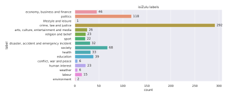
Figure 1 : Distribution initiale des classes en isiZulu
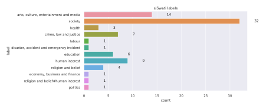
Figure 2 : Répartition initiale des classes de Siswati
Pour une meilleure modélisation, nous avons supprimé les catégories de classes avec peu d'observations, restant avec les catégories ci-dessous: 1. crime, droit et justice, 2. économie, affaires et finances, 3. éducation, 4. politique, 5. société pour isiZulu et 1. crime, droit et justice, 2. arts, culture, divertissement et médias, 3. éducation, 4. intérêt humain, 5. société pour Siswati. Étant donné que le nombre de catégories de classes est tombé à 5 catégories, la taille du jeu de données de presse est également tombée à 563 (articles de presse et titres) pour l'isiZulu et à 68 (titres de presse) pour le siswati. Les jeux de données finaux ont été nettoyés puis utilisés pour construire des modèles de classification ; toutefois, avant la construction des modèles, des représentations de mots ont été créées à l'aide de jeux de données plus volumineux.
3.2 Préparation/Nettoyage des données
Tous les ensembles de données collectés dans ce travail contenaient du bruit tel que des caractères uniques, des espaces blancs, des caractères encodés, des mots sans signification et des caractères spéciaux. Le bruit a dû être supprimé avant que les ensembles de données ne soient introduits dans les modèles. Tous ces bruits sur les ensembles de données ont été supprimés. Ci-dessous, nous expliquons chaque partie de l'étape de nettoyage suivie :
- Les caractères simples ont moins de signification, ils ont donc été retirés des ensembles de données.
- Il y avait des cas où il y avait plusieurs espaces entre deux mots, donc ces espaces ont été remplacés par un seul espace.
- Il y avait certains caractères/mots qui n'étaient pas encodés en ASCII, puis ces caractères ont été décodés en ASCII.
- Les caractères spéciaux font référence à des caractères tels que &%$ et ils ne sont pas acceptés par les modèles. Ils ont donc également été supprimés.
- Les données contenaient une combinaison de lettres qui ne formaient aucun mot isiZulu/Siswati existant. Des mots comme 'udkt', 'unksz', 'unkk'
. Sur la base de ces critères, ils ont également été supprimés pour simplifier le corpus, et par conséquent, améliorer l'analyse.
Puisque les jeux de données sont exempts de bruit, chaque lettre dans les jeux de données a été mise en minuscule, ce qui a abouti à des jeux de données propres à utiliser dans la construction de modèles d'apprentissage automatique.
3.2.1 Représentations des mots
Il a été mentionné précédemment que les plus grands jeux de données collectés à partir de SADILAR et du Leipzig Corpus pour chaque langue ont été utilisés pour la création de représentations de mots (vectoriseurs et plongements lexicaux). Les vectorisateurs pré-entraînés ont été créés, permettant la possibilité de construire des classificateurs avec une bonne généralisabilité à l'avenir. Par conséquent, à partir des corpus collectés pour chaque langue, nous avons créé les vectoriseurs suivants : sac de mots, TFIDF et word2vec (Mikolov et al. 2013).
Tableau 1 : Tailles des corpus des vectoriseurs en nombre de tokens
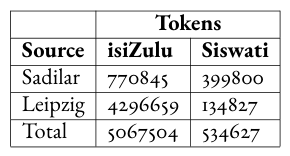
3.3 Modèles de classification des nouvelles
Nous avons arbitrairement sélectionné quelques algorithmes de classification pour entraîner des modèles à effectuer la classification des sujets d'actualité pour les ensembles de données isiZulu et Siswati. Les algorithmes sélectionnés sont la Régression Logistique, XGBoost, Naive Bayes et LSTM.
Nous avons effectué la classification sur les ensembles de données d'origine, puis appliqué des techniques de suréchantillonnage, à savoir l'augmentation de données et le SMOTE, pour résoudre le problème du déséquilibre des classes et augmenter la taille des données. Les modèles de classification ont été à nouveau exécutés sur les jeux de données Augmentés et SMOTE.
4 Expériences et résultats
Dans cette section, nous discutons des résultats obtenus à partir des expériences réalisées, c'est-à-dire des résultats de la combinaison multiple de représentations de mots et de modèles de classification sur les ensembles de données isiZulu et Siswati. Cependant, les résultats présentés ici sont de base, puisque ce travail ne fournit que des lignes directrices pour la création de ressources de langues à faibles ressources.
4.1 Configuration expérimentale
La taille maximale de jeton de 20 000 a été utilisée pour les vectorisateurs Bag Of Words et TFIDF, tandis que pour Word2vec nous avons utilisé la taille 300. Pour chacun des 4 modèles de classification, une validation croisée à 5 niveaux a été appliquée pendant l'entraînement du modèle. Comme nous créons des modèles de base et travaillons sur de petits ensembles de données (insuffisants pour être divisés en ensembles d'entraînement, de validation et de test), l'optimisation des paramètres n'a pas été effectuée dans ce travail.
4.1.1 Expériences de base
Dans les expériences de base, nous entraînons les modèles de classification en utilisant une validation croisée à 5 niveaux sur des ensembles de données originaux en isiZulu et en Siswati et présentons les performances des modèles pour chaque ensemble de données. Les résultats montrent que Word2vec et le modèle LSTM ont très bien fonctionné dans tous les ensembles de données par rapport aux autres modèles. Les tableaux ci-dessous montrent les résultats du modèle de classification obtenus à partir des ensembles de données originaux.
Tableau 2 : Performance du modèle de jeu de données original des articles isiZulu
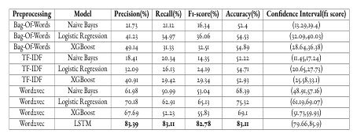
Tableau 3 : Performance du modèle sur le jeu de données original des titres en isiZulu
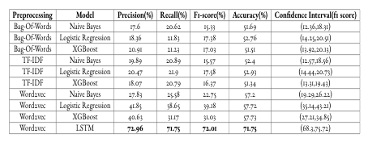
Tableau 4 : Performance du modèle sur les titres de l'ensemble de données original en siswati
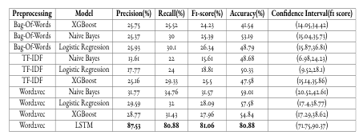
4.1.2 Augmentation
L'augmentation de données est la technique utilisée pour augmenter la taille des données afin d'améliorer les performances des classificateurs d'apprentissage automatique Oh et al. (2020). La méthode la plus courante pour augmenter les données consiste à remplacer les mots ou les phrases d'une phrase par leurs synonymes, le synonyme étant obtenu en obtenant les mots sémantiquement proches (Zhang et al. 2015).
Les ensembles de données Siswati et isiZulu ont été augmentés en utilisant la même approche où les mots originaux sur la phrase sont remplacés en fonction de leur signification contextuelle. L'augmentation a été réalisée en référençant la similarité des mots à partir du plongement lexical Word2vec, conformément à Marivate et al. (2020). L'augmentation des données a amélioré les performances de chaque modèle sur tous les ensembles de données par rapport aux ensembles de données d'origine, il reste donc à étudier l'efficacité et la robustesse de cet algorithme d'augmentation des données, ce qui peut être réalisé en comparant les résultats de l'algorithme sur des ensembles de données riches et pauvres en ressources.
Les modèles de classification entraînés sur Word2vec ont surpassé tous les modèles de classification entraînés sur TFIDF et Bag Of Words. Pour les articles en isiZulu, la combinaison de Word2vec et du modèle XGBoost a surpassé tous les modèles, obtenant un score f1 de 95,21%, d'autre part, la combinaison de Word2vec et du modèle de régression logistique a bien fonctionné sur l'ensemble de données des titres en isiZulu, obtenant un score f1 de 86,42%. Enfin, la combinaison des modèles Word2vec et LSTM a bien performé sur le jeu de données de titres en Siswati, obtenant un score f1 de 93,15 %. Il a été observé que le jeu de données des articles en isiZulu a obtenu un score F1 élevé par rapport aux titres en isiZulu, ce qui explique que les textes longs améliorent l'exactitude de la classification, et souligne également que la régression logistique surpasse XGBoost sur le jeu de données de textes courts. Il reste à effectuer la même comparaison sur le jeu de données en siswati, car elle n'a pas été couverte dans ce travail en raison de l'absence d'un jeu de données complet d'articles de presse en siswati.
Tableau 5 : Performance du Modèle du Jeu de Données Augmenté d'Articles isiZulu
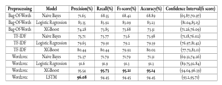
Tableau 6: Performances du modèle d’ensemble de données augmentées pour les titres en isiZulu
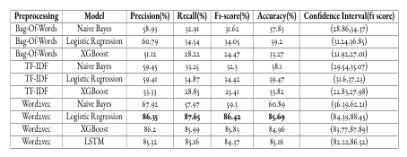
Tableau 7: Performances du modèle d’ensemble de données augmentées pour les titres Siswati
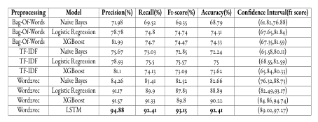
4.1.3 SMOTE
SMOTE est une technique de suréchantillonnage utilisée pour rééquilibrer l'ensemble d'entraînement original par la création d'échantillons synthétiques de la classe minoritaire Fernández et al. (2018). Cette technique fonctionne en sélectionnant la classe minoritaire et la quantité totale de suréchantillonnage pour équilibrer les classes, puis les k plus proches voisins pour cette classe particulière sont obtenus, donc de manière itérative les k plus proches voisins sont choisis aléatoirement pour créer de nouvelles instances Fernández et al. (2018). Cette technique de suréchantillonnage a été utilisée pour équilibrer les classes et augmenter l'ensemble de données. Notez que SMOTE utilise une approche différente de l'approche d'augmentation des données présentée précédemment.
Nous avons appliqué SMOTE à nos trois ensembles de données et exécuté le modèle de classification en utilisant une validation croisée 5 fois, les résultats de chaque ensemble de données sont présentés ci-dessous. À partir des tableaux ci-dessous, il a été observé que Word2vec a produit les meilleurs modèles de classification à partir des trois ensembles de données. XGBoost a bien performé dans tous les cas, obtenant des scores F1 de 93,35 %, 91,26 %, 87,46 % pour les jeux de données des articles en isiZulu, des titres en isiZulu et des titres en siswati respectivement. Nous avons observé que le modèle XGBoost sur les articles en isiZulu avait du mal à séparer la société et la politique du crime, du droit et de la justice, car la plupart des classifications incorrectes se produisaient dans les cas où la société et la politique étaient classées comme crime, droit et justice.
Tableau 8 : Performance du Modèle du Jeu de Données SMOTE d'Articles isiZulu
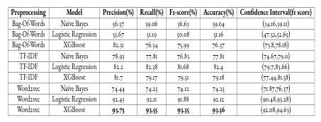
5 Synthèse
Nous avons observé que l'augmentation de données surpassait SMOTE dans deux cas, à savoir les jeux de données d'articles en isiZulu et de titres en Siswati, tandis que SMOTE surpassait l'augmentation de données uniquement dans le cas du jeu de données de titres en isiZulu. Cependant, nous espérons examiner la différence de performance de ces techniques de rééchantillonnage et disposer d'un pipeline confirmatoire pour fournir des indications sur l'approche à adopter selon les circonstances. Cependant, nous présentons le pipeline généralisé obtenu à partir de ce travail comme base de référence.
Tableau 9 : Performance du modèle du jeu de données SMOTE de titres isiZulu
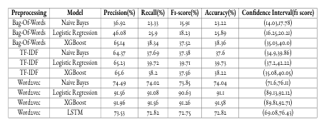
Tableau 10 : Performance du modèle sur le jeu de données SMOTE des titres en siswati
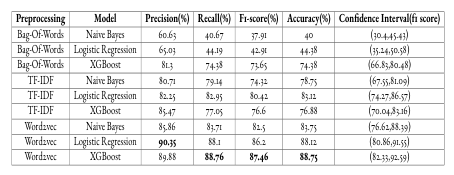
Le pipeline obtenu à partir de ce travail a été résumé et présenté dans la figure 3 ci-dessous avec les modèles de classification les plus performants correspondants présentés dans le tableau 3, la figure 3 montre les choix qui ont produit les meilleurs résultats dans différentes circonstances pour trois ensembles de données différents. On a observé que les ensembles de données utilisés ressemblaient à trois qualités différentes, à savoir, grande taille et long texte (Articles isiZulu), grande taille et texte court (Titres isiZulu), et petite taille et texte court (Siswati), ces variétés ont produit différents résultats des modèles dans les mêmes circonstances et peuvent être généralisées comme suit :
- Si la taille des données est grande et contient du texte long, l'Augmentation de Données Contextuelle est recommandée plutôt que SMOTE, et LSTM est susceptible de mieux performer.
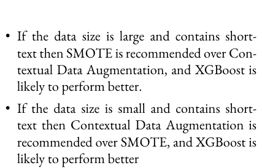
La généralisation ci-dessus est limitée au plongement lexical Word2vec, car c'est celui qui a produit des résultats remarquables sur tous les jeux de données par rapport à TFIDF et au sac de mots. Il reste une tâche d'enquêter davantage sur les mauvaises performances de TFIDF et Bag-Of-Words, peut-être le changement de paramètre dans la classification pourrait conduire à de bons résultats.
Tableau 11 : Modèles de classification les plus performants
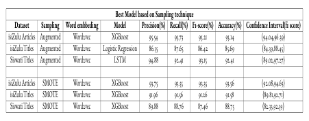
6 Conclusion et travaux futurs
Ce travail a introduit la collecte et l'annotation des ensembles de données d'actualités en isiZulu et en Siswati. Il y a encore une pénurie de données (plus particulièrement des données annotées) de ces deux langues maternelles, en particulier Siswati. Cependant, ce travail a ouvert la voie pour les autres chercheurs qui souhaiteraient utiliser des données annotées pour l'isiZulu et/ou le Siswati dans des tâches en aval de TALN.
Les résultats expérimentaux des modèles de classification et des différentes combinaisons de plongements lexicaux avec les modèles de référence ont été présentés. Bien que nous ayons été limités par la disponibilité des données, cela donne un aperçu de ce qui pourrait être réalisé avec des ensembles de données minimaux. Les jeux de données annotés en isizulu et en siswati seront mis à la disposition d'autres chercheurs, les vectoriseurs pré-entraînés seront publiés en open source pour d'autres chercheurs et les résultats de classification pourront être utilisés comme bancs d'essai.
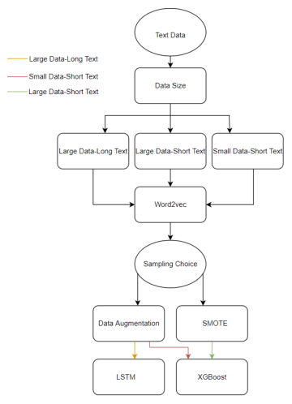
Figure 3 : Pipeline recommandé
La collecte et l'annotation des ensembles de données en langue maternelle demeurent une tâche pour l'avenir. Pour que cela fonctionne, il faut identifier d’autres sources linguistiques où l’ensemble de données peut être extrait pour entraîner davantage de modèles. En outre, les chercheurs en TALN doivent se concentrer davantage sur des moyens efficaces d’augmenter les ensembles de données. Ils devraient être comparés avec l'échantillonnage SMOTE, en raison du déséquilibre dans le jeu de données. Il est avantageux d’avoir des moyens efficaces d’augmenter les ensembles de données en langue maternelle.
De plus, il est également intéressant d'étudier la faible performance de TFIDF et du sac de mots par rapport à Word2vec ; les pistes d'investigation possibles pourraient être la nature du plongement lexical et l'optimisation des hyperparamètres des modèles de classification qui pourraient améliorer les performances de classification. Une autre extension de ce travail est l'apprentissage par transfert de l'isiZulu au Siswati. L'ensemble de données isiZulu est grand comparé à l'ensemble de données Siswati, ce qui en fait une voie de recherche viable pour étudier si l'apprentissage par transfert améliore les performances de classification de Siswati dans ce contexte.
Notes
- [1] https://iptc.org/standards/newscodes/
- [2] https://github.com/dsfsi/za-isizulu-siswati-news-2022
- [3] https://doi.org/10.5281/zenodo. 7193346
Références
Abonizio, H. Q. & Junior, S. B. (2020), Pre-trained data augmentation for text classification, in 'Brazilian Conference on Intelligent Systems', Springer, pp. 551-565.
Alexander, M. (2021), 'The 11 languages of south africa'. URL: https://southafrica-info.com/arts-culture/11-languages-south-africa/
Baumann, P. & Pierrehumbert, J. (2014), Using resource-rich languages to improve morphological analysis of under-resourced languages, in 'Proceedings of the Ninth International Conference on Language Resources and Evaluation (LREC'14)', pp. 3355-3359.
Bonab, H., Allan, J. & Sitaraman, R. (2019), Simulating clir translation resource scarcity using high-resource languages, in 'Proceedings of the 2019 ACM SIGIR International Conference on Theory of Information Retrieval', pp. 129-136.
Bosch, S., Pretorius, L. & Fleisch, A. (2008), 'Experimental bootstrapping of morphological analysers for nguni languages', Nordic Journal of African Studies 17(2), 23-23.
Dialani, P. (2020), 'What is nlp and why is it important?'. URL: https://www.analyticsinsight.net/what-is-nlp-and-why-is-it-important/#:∼:text=Natural language%2
Duong, H.-T. & Nguyen-Thi, T.-A. (2021), 'A review: preprocessing techniques and data augmentation for sentiment analysis', Computational Social Networks 8(1), 1-16.
Duvenhage, B., Ntini, M. & Ramonyai, P. (2017), Improved text language identification for the south african languages, in '2017 Pattern Recognition Association of South Africa and Robotics and Mechatronics (PRASA-RobMech)', IEEE, pp. 214-218.
Eiselen, R. & Puttkammer, M. J. (2014), Developing text resources for ten south african languages., in 'LREC', pp. 3698-3703.
Fang, M. & Cohn, T. (2017), 'Model transfer for tagging low-resource languages using a bilingual dictionary', arXiv preprint arXiv:1705.00424.
Fernández, A., Garcia, S., Herrera, F. & Chawla, N. V. (2018), 'Smote for learning from imbalanced data: progress and challenges, marking the 15-year anniversary', Journal of artificial intelligence research 61,863-905.
Hsueh, P.-Y., Melville, P. & Sindhwani, V. (2009), Data quality from crowdsourcing: a study of annotation selection criteria, in 'Proceedings of the NAACL HLT 2009 workshop on active learning for natural language processing', pp. 27-35.
Kobayashi, S. (2018), 'Contextual augmentation: Data augmentation by words with paradigmatic relations', arXiv preprint arXiv:1805.06201.
Marivate, V., Sefara, T., Chabalala, V., Makhaya, K., Mokgonyane, T., Mokoena, R. & Modupe, A. (2020), 'Investigating an approach for low resource language dataset creation, curation and classification: Setswana and sepedi', arXiv preprint arXiv:2003.04986.
Mesham, S., Hayward, L., Shapiro, J. & Buys, J. (2021), 'Low-resource language modelling of south african languages', arXiv preprint arXiv:2104.00772.
Mikolov, T., Sutskever, I., Chen, K., Corrado, G. S. & Dean, J. (2013), Distributed representations of words and phrases and their compositionality, in C.
Burges, L. Bottou, M. Welling, Z. Ghahramani & K. Weinberger, eds, 'Advances in Neural Information Processing Systems', Vol. 26, Curran Associates, Inc. URL: https://proceedings.neurips.cc/paper/2013/file/9aa42b31882ec039965f3c4923ce901b-Paper.pdf
Nguyen, T. Q. & Chiang, D. (2017), 'Transfer learning across low-resource, related languages for neural machine translation', arXiv preprint arXiv:1708.09803.
Niyongabo, R. A., Qu, H., Kreutzer, J. & Huang, L. (2020), 'Kinnews and kirnews: Benchmarking cross-lingual text classification for kinyarwanda and kirundi', arXiv preprint arXiv:2010.12174.
Nyoni, E. & Bassett, B. A. (2021), 'Low-resource neural machine translation for southern african languages', arXiv preprint arXiv:2104.00366.
Oh, C., Han, S. & Jeong, J. (2020), 'Time-series data augmentation based on interpolation', Procedia Computer Science 175, 64-71.
Rakholia, R. M. & Saini, J. R. (2016), Lexical classes based stop words categorization for gujarati language, in '2016 2nd international conference on advances in computing, communication, & automation (ICACCA)(Fall)', IEEE, pp. 1-5.
Shamsfard, M. (n.d.), 'Challenges and opportunities in processing low resource languages: A study on persian'.
Stenetorp, P., Pyysalo, S., Topić, G., Ohta, T., Ananiadou, S. & Tsujii, J. (2012), Brat: a web-based tool for nlp-assisted text annotation, in 'Proceedings of the Demonstrations at the 13th Conference of the European Chapter of the Association for Computational Linguistics', pp. 102-107.
Tang, X., Cheng, S., Do, L., Min, Z., Ji, F., Yu, H., Zhang, J. & Chen, H. (2018), 'Improving multilingual semantic textual similarity with shared sentence encoder for low-resource languages', arXiv preprint arXiv:1810.08740.
Whyatt, B. & Pavlović, N. (2019), 'Languages of low diffusion and low resources: translation research and training challenges: Special issue proposal itt-15 (1), march 2021'.
Xu, P. & Fung, P. (2013), 'Cross-lingual language modeling for low-resource speech recognition', IEEE transactions on audio, speech, and language processing 21(6), 1134-1144.
Zhang, X., Zhao, J. & LeCun, Y. (2015), 'Characterlevel convolutional networks for text classification', Advances in neural information processing systems 28,649-657.
Zoph, B., Yuret, D., May, J. & Knight, K. (2016), 'Transfer learning for low-resource neural machine translation', arXiv preprint arXiv:1604.02201.
English et Français
Izindaba-Tindzaba: Machine learning news categorisation for Long and Short Text for isiZulu and Siswati
Izindaba-Tindzaba: Catégorisation des nouvelles par apprentissage automatique pour les textes longs et courts en isiZulu et en Siswati
Affiliations
Madodonga, Andani
Department of Computer Science, University of Pretoria, South Africa
Marivate, Vukosi
Department of Computer Science, University of Pretoria, South Africa
Adendorff, Matthew
Open Cities Lab
Affiliations
Madodonga, Andani
Department of Computer Science, University of Pretoria, South Africa
Marivate, Vukosi
Department of Computer Science, University of Pretoria, South Africa
Adendorff, Matthew
Open Cities Lab
Abstract
Résumé
Local/Native South African languages are classified as low-resource languages. As such, it is essential to build the resources for these languages so that they can benefit from advances in the field of natural language processing. In this work, the focus was to create annotated news datasets for the isiZulu and Siswati native languages based on news topic classification tasks and present the findings from these baseline classification models. Due to the shortage of data for these native South African languages, the datasets that were created were augmented and oversampled to increase data size and overcome class classification imbalance. In total, four different classification models were used namely Logistic regression, Naive bayes, XGBoost and LSTM. These models were trained on three different word embeddings namely Bag-Of-Words, TFIDF and Word2vec. The results of this study showed that XGBoost, Logistic Regression and LSTM, trained from Word2vec performed better than the other combinations.
Les langues sud-africaines locales / autochtones sont classées comme des langues à faibles ressources. En tant que tel, il est essentiel de construire les ressources pour ces langues afin qu'elles puissent bénéficier des progrès dans le domaine du traitement du langage naturel. Dans ce travail, l'objectif était de créer des jeux de données d'actualités annotés pour les langues natives isiZulu et Siswati basés sur des tâches de classification de sujets d'actualités et de présenter les résultats de ces modèles de classification de base. En raison du manque de données pour ces langues natives sud-africaines, les ensembles de données créés ont été augmentés et suréchantillonnés pour augmenter la taille des données et surmonter le déséquilibre de classification des classes. Au total, quatre modèles de classification différents ont été utilisés, à savoir la régression logistique, la classification naïve bayésienne, XGBoost et LSTM. Ces modèles ont été entraînés sur trois plongements lexicaux différents, à savoir le sac de mots, TFIDF et word2vec. Les résultats de cette étude ont montré que XGBoost, Régression Logistique et LSTM, entraînés à partir de Word2vec ont obtenu de meilleurs résultats que les autres combinaisons.
Keywords
Mots-clés
South African native Languages, Low Resources Languages, Data Augmentation, Topic Classification, News Categorisation
Langues autochtones sud-africaines, Langues à faibles ressources, Augmentation des données, Classification des sujets, Catégorisation des nouvelles
1 Introduction
1 Introduction
Natural Language Processing (NLP) is a subfield of artificial intelligence, linguistics and computer science that focuses on enablling computers to process natural language (Dialani 2020). One of the cases where NLP has been beneficial to people is where it has been used for machine translation, performing the task of translating from one language to another. In this case, NLP helps the computer or machine to attempt the conversion from one langauge to another. NLP can also assist in learning and prediction sentiment/opinion from sentences or text. This NLP capability is utilised by companies to understand how customers feel and their opinion about the company's products and services through the analysis of their social media posts and comments. Furthermore, the chatbots that are used in the customer services space are one of the examples of NLP application (Dialani 2020). Contextual chatbots and Virtual Text Assistant are now widely used but they mostly understand a limited number of languages, such as English. South African native languages do not have enough resources to be used to built such contextual Chatbots and Virtual Text Assistant. Therefore, the resources for native languages need to be created so that they can be used to build software agents that understand South African native languages (Duvenhage et al. 2017).
Le Traitement Automatique du Langage Naturel (TALN) est un sous-domaine de l'intelligence artificielle, de la linguistique et de l'informatique qui se concentre sur la capacité à permettre aux ordinateurs de traiter le langage naturel (Dialani 2020). L'un des cas où le TAL a été bénéfique pour les gens est celui où il a été utilisé pour la traduction automatique, effectuant la tâche de traduire d'une langue à une autre. Dans ce cas, le TAL aide l'ordinateur ou la machine à tenter la conversion d'une langue à une autre. Le TAL peut également aider à l'apprentissage et à la prédiction de sentiments/opinions à partir de phrases ou de textes. Cette capacité du TAL est utilisée par les entreprises pour comprendre ce que ressentent les clients et leur opinion sur les produits et services de l'entreprise grâce à l'analyse de leurs publications et commentaires sur les médias sociaux. De plus, les dialogueurs utilisés dans le domaine du service client sont l'un des exemples d'application du TAL (Dialani 2020). Les chatbots contextuels et les assistants textuels virtuels sont désormais largement utilisés, mais ils comprennent principalement un nombre limité de langues, telles que l'anglais. Les langues maternelles sud-africaines ne disposent pas de suffisamment de ressources pour être utilisées pour construire de tels chatbots contextuels et assistants texte virtuels. Par conséquent, les ressources pour les langues maternelles doivent être créées afin qu’elles puissent être utilisées pour créer des agents logiciels qui comprennent les langues maternelles sud-africaines (Duvenhage et al. 2017).
South Africa is a multilingual country with eleven langauges (two of which are European and nine are African languages); the African languages are Sepedi, Sesotho, Setswana, Siswati, Tshivenda, Xitsonga, isiZulu, isiNdebele and isiXhosa and on the other hand, European languages are English and Afrikaans. It is important to note that these languages are official in South Africa (Alexander 2021). In South Africa, we have a challenge with the nine African languages because they are resource-poor. There is a shortage of curated and annotated corpora to enable them to benefit from Natural Language Processing. Therefore, the purpose of this study is to focus specifically on the corpus creation and annotation for isiZulu and Siswati and perform a topic classification tasks on the data.
L'Afrique du Sud est un pays multilingue avec onze langues (dont deux sont européennes et neuf sont des langues africaines); les langues africaines sont Sepedi, Sesotho, Setswana, Siswati, Tshivenda, Xitsonga, isiZulu, isiNdebele et isiXhosa et d'autre part, les langues européennes sont l'anglais et l'afrikaans. Il est important de noter que ces langues sont officielles en Afrique du Sud (Alexander 2021). En Afrique du Sud, nous avons un défi avec les neuf langues africaines car elles sont pauvres en ressources. Il y a une pénurie de corpus organisés et annotés pour leur permettre de bénéficier du traitement du langage naturel. Par conséquent, l'objectif de cette étude est de se concentrer spécifiquement sur la création et l'annotation de corpus pour l'isiZulu et le Siswati et d'effectuer des tâches de classification thématique sur les données.
2 Critical Natural Language Processing Components
2 Composantes critiques du traitement du langage naturel
Globalisation and the increase in digital communications have created the demand for NLP systems that enable fast communication between people speaking different languages. However, some languages are missing in these systems. For instance, there are roughly 7000 spoken languages on the planet and Most of them still are not included in the NLP systems, primarily because they do not have the labelled corpora to build those NLP systems (Baumann & Pierrehumbert 2014). These languages with scarce or no resources are low-resourced languages (Whyatt & Pavlović 2019). The language resources include (but are not limited to) the annotated corpora and core technologies. Examples of core technologies include lemmatisers, part of speech tagger and morphological decomposers (Eiselen & Puttkammer 2014). On the other hand, the languages with high resources are the ones that have most of the resources needed to build the NLP technology (Xu & Fung 2013).
La mondialisation et l'augmentation des communications numériques ont créé une demande de systèmes de TAL permettant une communication rapide entre des personnes parlant des langues différentes. Cependant, certaines langues sont manquantes dans ces systèmes. Par exemple, il existe environ 7000 langues parlées sur la planète et la plupart d'entre elles ne sont toujours pas incluses dans les systèmes de TALN, principalement parce qu'elles ne disposent pas de corpus étiquetés pour construire ces systèmes de TALN (Baumann & Pierrehumbert 2014). Ces langues avec peu ou pas de ressources sont des langues à faibles ressources (Whyatt & Pavlović 2019). Les ressources linguistiques comprennent (mais ne sont pas limitées à) les corpus annotés et les technologies de base. Des exemples de technologies de base incluent les lemmatiseurs, les étiqueteurs de catégories grammaticales et les décomposeurs morphologiques (Eiselen & Puttkammer 2014). D'autre part, les langues avec de nombreuses ressources sont celles qui disposent de la plupart des ressources nécessaires pour construire la technologie de TALN (Xu & Fung 2013).
The high-resourced languages include English, French, Finnish, Italian, German, Mandarin, Japanese, etc. (Bonab et al. 2019, Xu & Fung 2013) and low-resourced languages include languages such as isiZulu, isiXhosa, Siswati etc. (Bosch et al. 2008). A study, by Eiselen & Puttkammer (2014), focused on the low-resourced languages, namely, isiZulu and Siswati; stated that annotated corpora are one of the things that low-resourced languages lack. Thus, the isiZulu and Siswati datasets need to be annotated, as part of the process of making these languages accessible for NLP and by enriching these two languages. Hsueh et al. (2009) defines data annotation as the process of labelling the dataset(s), an important step when building machine learning models. Stenetorp et al. (2012) stated that manual data annotation is the most important, time-consuming, costly, and tedious task for NLP researchers. Therefore, automation tools are developed to perform these annotations.
Les langues à ressources élevées comprennent l’anglais, le français, le finnois, l’italien, l’allemand, le mandarin, le japonais, etc. (Bonab et al. 2019, Xu & Fung 2013) et les langues à faibles ressources comprennent des langues telles que isiZulu, isiXhosa, Siswati, etc. (Bosch et al. 2008). Une étude, par Eiselen & Puttkammer (2014), axée sur les langues à faibles ressources, à savoir, isiZulu et Siswati; a déclaré que les corpus annotés sont l'une des choses que les langues à faibles ressources manquent. Ainsi, les jeux de données isiZulu et Siswati doivent être annotés, dans le cadre du processus visant à rendre ces langues accessibles pour le TAL et à enrichir ces deux langues. Hsueh et al. (2009) définissent l’annotation de données comme le processus d’étiquetage des ensembles de données, une étape importante dans la construction de modèles d’apprentissage automatique. Stenetorp et al. (2012) ont déclaré que l'annotation manuelle des données est la tâche la plus importante, la plus chronophage, la plus coûteuse et la plus fastidieuse pour les chercheurs en TAL. Par conséquent, des outils d'automatisation sont développés pour effectuer ces annotations.
The lack of curated and annotated data impede the process of fighting the shortage of resources for low-resourced languages in the NLP space (Niyongabo et al. 2020). Besides, established NLP methods often cannot be transferred on or to these languages without these corpora (Niyongabo et al. 2020). Niyongabo et al. (2020) collected the datasets of two closely related African languages - Kirundi and Kinyarwanda from two different sources. A total of 21268 and 4612 articles were annotated for Kinyarwanda and Kirundi respectively. The two datasets underwent a cleaning process that involved the removal of special language characters and stop-words. The sources were newspapers and websites. These datasets were annotated, based on the title and content of the contained articles, into the following categories: Politics; Sport; Economy; Health, Entertainment; History; Technology; Tourism; Culture; Fashion; Religion, Environment; Education; and Relationship (Rakholia & Saini 2016). Hence, a very similar task was performed in this work as part of language resources creation.
Le manque de données organisées et annotées entrave le processus de lutte contre la pénurie de ressources pour les langues peu dotées dans le domaine du TAL (Niyongabo et al. 2020). En outre, les méthodes de TAL établies ne peuvent souvent pas être transférées vers ou sur ces langues sans ces corpus (Niyongabo et al. 2020). Niyongabo et al. (2020) ont collecté les jeux de données de deux langues africaines étroitement apparentées - le kirundi et le kinyarwanda - auprès de deux sources différentes. Au total, 21268 articles et 4612 articles ont été annotés pour le Kinyarwanda et le Kirundi, respectivement. Les deux jeux de données ont subi un processus de nettoyage qui impliquait la suppression des caractères linguistiques spéciaux et des mots vides. Les sources étaient des journaux et des sites web. Ces ensembles de données ont été annotés, en fonction du titre et du contenu des articles contenus, dans les catégories suivantes: Politique; Sport; Economie; Santé, Divertissement; Histoire; Technologie; Tourisme; Culture; Mode; Religion, Environnement; Éducation; et Relations (Rakholia & Saini 2016). Par conséquent, une tâche très similaire a été réalisée dans ce travail dans le cadre de la création de ressources linguistiques.
2.1 Data generation techniques for low-resourced languages
2.1 Techniques de génération de données pour les langues à faibles ressources
An existing approach utilised to mitigate the challenges of low-resourced language data, is the language translation approach. That is the low-resourced language gets translated into the resource-rich language (Tang et al. 2018). However, in most cases, this approach suffers from language biases and may be impractical to achieve in real life (Tang et al. 2018). Sometimes the direct translation may be impossible or inaccurate due to language differences. Hence, the translated data will require manual processing thereafter, which is tedious and time-consuming. Manually creating data for low-resourced languages is time-consuming but a good approach, moreover, it introduces minimal language biases and more accurate than translated datasets (Shamsfard n.d.).
Une approche existante utilisée pour atténuer les défis des données linguistiques à faibles ressources est l'approche de traduction linguistique. C’est-à-dire que la langue à faibles ressources est traduite dans la langue riche en ressources (Tang et al. 2018). Cependant, dans la plupart des cas, cette approche souffre de biais linguistiques et peut être impractique à réaliser dans la vie réelle (Tang et al. 2018). Parfois, la traduction directe peut être impossible ou inexacte en raison des différences linguistiques. Par conséquent, les données traduites nécessiteront un traitement manuel par la suite, ce qui est fastidieux et prend du temps. La création manuelle de données pour les langues à faibles ressources prend du temps, mais c’est une bonne approche; de plus, elle introduit des biais linguistiques minimes et des ensembles de données plus précis que les ensembles de données traduits (Shamsfard s.d.).
Cross-lingual and transfer learning is one of the combinations of techniques frequently used or preferred in NLP due to its speed and efficiency (Shamsfard n.d.). This further serves to highlight why all languages must have NLP resources such as annotated data to avoid data simulations that have unfavourable effects.
L'apprentissage interlingue et par transfert est l'une des combinaisons de techniques fréquemment utilisées ou privilégiées en TAL en raison de sa rapidité et de son efficacité (Shamsfard n.d.). Cela contribue en outre à souligner pourquoi toutes les langues doivent disposer de ressources de TAL telles que des données annotées afin d'éviter des simulations de données ayant des effets défavorables.
Data Augmentation is a method that generates a copy (or unique data) of the data by slightly altering the existing data (Duong & Nguyen-Thi 2021). It increases the size of small training data in ways that improve model performance (Abonizio & Junior 2020). Model performance is highly dependent on the quality and size of the training data. Data Augmentation addresses the issue of small training data that leads to the models losing their generalisability (Kobayashi 2018).
L’augmentation de données est une méthode qui génère une copie (ou des données uniques) des données en modifiant légèrement les données existantes (Duong & Nguyen-Thi 2021). Il augmente la taille des petites données d’entraînement de manière à améliorer la performance du modèle (Abonizio & Junior 2020). Les performances du modèle dépendent fortement de la qualité et de la taille des données d'entraînement. L’augmentation des données résout le problème des petites données d’entraînement qui entraînent la perte de généralisabilité des modèles (Kobayashi 2018).
Work by Marivate et al. (2020) had a small data size of Sepedi and Setswana native languages, and incorporated word embeddings based-contextual augmentation to increase the dataset used to train classification models. Each training dataset was augmented 20 times while the test dataset remains unchanged. In their study, the new data created replaced the words (based on context) in the sentences. Hence a new sentence was formed as a result of applying Contextual Data Augmentation. Furthermore, Data Augmentation improved the performance of the classifiers (Marivate et al. 2020). In this current study, the same Data Augmentation (word embedding-based augmentation) was performed on the Siswati and isiZulu dataset to increase the data size.
Le travail de Marivate et al. (2020) avait une petite taille de données des langues natives Sepedi et Setswana, et a incorporé une augmentation contextuelle basée sur des plongements lexicaux pour augmenter le jeu de données utilisé pour entraîner des modèles de classification. Chaque ensemble de données d'entraînement a été augmenté 20 fois tandis que l'ensemble de données de test reste inchangé. Dans leur étude, les nouvelles données créées ont remplacé les mots (basés sur le contexte) dans les phrases. Ainsi, une nouvelle phrase a été formée suite à l'application de l'Augmentation Contextuelle des Données. En outre, l’augmentation des données a amélioré les performances des classificateurs (Marivate et al. 2020). Dans cette présente étude, la même augmentation de données (augmentation basée sur des plongements de mots) a été réalisée sur les jeux de données Siswati et isiZulu pour augmenter la taille des données.
2.2 Dealing with data imbalance
2.2 Traitement du déséquilibre des données
The Synthetic Minority Oversampling Technique (SMOTE) is another technique that can be adopted when the learning is done on an imbalanced dataset, since it solves the problem of class imbalance (Fernández et al. 2018). SMOTE works by generating synthetic examples through inserting different values(words) in minority class, the values are randomly picked from a defined neighbourhood within feature space. Minority class is selected, then obtain the k-nearest neighbours of the same minority class and therefore utilises the k- neighbours to create the new synthetic examples (Fernández et al. 2018).
La technique de suréchantillonnage minoritaire synthétique (SMOTE) est une autre technique qui peut être adoptée lorsque l'apprentissage est effectué sur un ensemble de données déséquilibré, puisqu'elle résout le problème de déséquilibre de classe (Fernández et al. 2018). SMOTE fonctionne en générant des exemples synthétiques en insérant différentes valeurs (mots) dans la classe minoritaire, les valeurs sont choisies au hasard à partir d'un voisinage défini dans l'espace de fonctionnalité. La classe minoritaire est sélectionnée, puis on obtient les k voisins les plus proches de la même classe minoritaire et on utilise donc les k voisins pour créer les nouveaux exemples synthétiques (Fernández et al., 2018).
2.3 Related work
2.3 Travaux connexes
Supervised learning models perform better on larger labelled datasets, which presents a challenge for low-resourced languages as they don't have enough data and annotating data can be expensive (Fang & Cohn 2017). Most prior studies focused on developing parallel corpora between low and resource-rich languages, but parallel corpora are often unavailable for some low-resourced languages (Fang & Cohn 2017). Work by Zoph et al. (2016) identified low-resourced languages and investigated the idea of distance learning on machine translation. Since English and French are resource-rich languages, the two languages trained a neural machine translation (NMT) (Zoph et al. 2016). An English-French neural machine translation (NMT) model was initially trained. Afterwards, the NMT model initialised another NMT model to be used on a low-resourced and high-resourced pair (e.g. Uzbek-English) (Zoph et al. 2016), as such utilising transfer learning. In this case, the low-resourced languages investigated for transfer were Uzbek, Hausa, Turkish and Urdu. The transfer learning was shown to improve the BLEU (bilingual evaluation understudy) for low-resourced Neural machine translation (Zoph et al. 2016).
Les modèles d'apprentissage supervisé fonctionnent mieux sur des jeux de données étiquetés plus grands, ce qui pose un défi pour les langues peu dotées en ressources puisqu'elles ne disposent pas de suffisamment de données et que l'annotation des données peut être coûteuse (Fang & Cohn 2017). La plupart des études précédentes se sont concentrées sur le développement de corpus parallèles entre les langues pauvres et riches en ressources, mais les corpus parallèles sont souvent indisponibles pour certaines langues pauvres en ressources (Fang & Cohn 2017). Les travaux de Zoph et coll. (2016) ont identifié les langues à faibles ressources et étudié l’idée de l’apprentissage à distance sur la traduction automatique. Puisque l'anglais et le français sont des langues bien dotées en ressources, les deux langues ont servi à entraîner un modèle de traduction automatique neuronale (NMT) (Zoph et al. 2016). Un modèle de traduction automatique neuronale (NMT) anglais-français a été initialement entraîné. Ensuite, le modèle NMT a initialisé un autre modèle NMT à utiliser sur une paire de langues peu dotées et riches en ressources (par exemple, ouzbek-anglais) (Zoph et al. 2016), utilisant ainsi l'apprentissage par transfert. Dans ce cas, les langues à faibles ressources étudiées pour le transfert étaient l'ouzbek, le haoussa, le turc et l'ourdou. Il a été démontré que l'apprentissage par transfert améliore le BLEU (bilingual evaluation understudy) pour la traduction automatique neuronale à faibles ressources (Zoph et al. 2016).
Work by Nguyen & Chiang (2017) explored transfer learning between the two low-resourced languages Turkey and Uzbek by first pairing each language with English and then generating the parallel data. Then, split the words with Bytes Pair Encoding (BPE) to maximise the overlapping vocab (Nguyen & Chiang 2017). The model and word embedding are trained on the first language pair (Turkey-English) and then the same model parameters and word embeddings were transferred to the other model that trained the second language pair (Uzbek-English). This technique improved the BLEU by 4.3% (Nguyen & Chiang 2017).
Le travail de Nguyen & Chiang (2017) a exploré l'apprentissage par transfert entre les deux langues peu dotées en ressources, le turc et l'ouzbek, en associant d'abord chaque langue à l'anglais, puis en générant les données parallèles. Ensuite, divisez les mots avec Bytes Pair Encoding (BPE) pour maximiser le chevauchement du vocabulaire (Nguyen & Chiang 2017). Le modèle et le plongement lexical sont entraînés sur la première paire de langues (turc-anglais), puis les mêmes paramètres de modèle et plongements lexicaux ont été transférés à l'autre modèle qui a entraîné la seconde paire de langues (ouzbek-anglais). Cette technique a amélioré le BLEU de 4,3% (Nguyen & Chiang 2017).
The datasets of low-resourced South African languages, isiZulu collected from isolezwe and National Centre for Human Language Technology (www.sadilar.org); and Sepedi collected from National Centre for Human Language Technology were used to evaluate the performance of open-vocabulary models on the small datasets, the evaluated models include n-grams, LSTM, RNN, FFNN, and transformers. The performance of the models was evaluated using the byte pair encoding (BPE). The RNN performed better than the rest of the models on both the isiZulu and Sepedi datasets (Mesham et al. 2021). Nyoni & Bassett (2021) explored the machine translation capability from the zero-short learning, transfer learning and multilingual learning on two South African languages, namely, isiZulu and isiXhosa; and one Zimbabwean language, that is Shona. The datasets were in language pair (parallel text), that is, English-to-Shona, English-to-Zulu, English-to-Xhosa and Zulu -toXhosa, with the pair English -to- Zulu being the target pair since it has the smallest datasets (sentence pair). The transfer learning and zero-short learning did not outperform the multilingual model which produced the Bleu score of 18.6 for the English-to-Zulu pair. Moreover, these results provide an avenue for the development and improvement of low resource translation techniques (Nyoni & Bassett 2021).
Les jeux de données de langues sud-africaines à faibles ressources, l'isiZulu collecté auprès d'isolezwe et du National Centre for Human Language Technology (www.sadilar.org) ; et le sepedi collecté auprès du National Centre for Human Language Technology ont été utilisés pour évaluer la performance des modèles à vocabulaire ouvert sur les petits jeux de données, les modèles évalués comprennent les n-grammes, LSTM, RNN, FFNN et les transformeurs. La performance des modèles a été évaluée en utilisant l'encodage par paires d'octets (BPE). Le RNN a obtenu de meilleurs résultats que le reste des modèles sur les ensembles de données en isiZulu et en Sepedi (Mesham et al., 2021). Nyoni & Bassett (2021) ont exploré la capacité de traduction automatique à partir de l'apprentissage zero-shot, de l'apprentissage par transfert et de l'apprentissage multilingue sur deux langues sud-africaines, à savoir l'isiZulu et l'isiXhosa ; et une langue zimbabwéenne, le shona. Les ensembles de données étaient en paire de langues (texte parallèle), c'est-à-dire, anglais vers shona, anglais vers zoulou, anglais vers xhosa et zoulou vers xhosa, la paire anglais vers zoulou étant la paire cible puisqu'elle a les plus petits ensembles de données (paire de phrases). L'apprentissage par transfert et l'apprentissage zero-shot n'ont pas surpassé le modèle multilingue qui a produit un score Bleu de 18,6 pour la paire anglais-zoulou. De plus, ces résultats ouvrent la voie au développement et à l’amélioration des techniques de traduction à faibles ressources (Nyoni & Bassett 2021).
Work by Marivate et al. (2020) attempted to address the issue of lack of clear guidelines for low-resources languages in terms of collecting and curating the data for specific use in the Natural Language Processing domain. In their investigation, two datasets of news headlines written in Sepedi and Setswana were collected, curated, annotated, and fed into the machine learning classification models to perform text classification. The datasets were annotated by means of categorising the articles into the following categories based on context: Legal; General News; Sports; Politics; Traffic News; Community Activities; Crime; Business; Foreign Affairs (Marivate et al. 2020). The evaluation metric was the F1-score, which is a model performance measure. One of the models, Xgboost, performed well as compared to other models (Marivate et al. 2020).
Les travaux de Marivate et al. (2020) ont tenté de résoudre le problème du manque de directives claires pour les langues à faibles ressources en termes de collecte et de conservation des données pour une utilisation spécifique dans le domaine du traitement du langage naturel. Dans leur investigation, deux jeux de données d'articles de presse écrits en Sepedi et Setswana ont été collectés, curatés, annotés et introduits dans des modèles de classification d'apprentissage automatique pour effectuer une classification de texte. Les jeux de données ont été annotés en catégorisant les articles selon les catégories suivantes basées sur le contexte : Juridique ; Actualités générales ; Sports ; Politique ; Infos trafic ; Activités communautaires ; Crime ; Affaires ; Affaires étrangères (Marivate et al. 2020). La métrique d'évaluation était le score F1, qui est une mesure de la performance du modèle. L'un des modèles, Xgboost, a bien performé par rapport aux autres modèles (Marivate et al. 2020).
3 Developing news classification models for isiZulu and Siswati languages
3 Développement de modèles de classification de l'actualité pour les langues isiZulu et Siswati
In this section we discuss data collection and cleaning processes together with the classification models building approach.
Dans cette section, nous discutons des processus de collecte de données et de nettoyage ainsi que de l'approche de construction des modèles de classification.
3.1 Data Collection, Cleaning and Annotation
3.1 Collecte de données, nettoyage et annotation
We discuss the initial news data collection and annotation process. We further discuss the data collection process of the larger dataset that was used to build our word representations.
Nous discutons du processus initial de collecte et d'annotation des données d'actualités. Nous discutons en outre le processus de collecte de données de l'ensemble de données plus large qui a été utilisé pour construire nos représentations de mots.
3.1.1 News data collection and annotation
3.1.1 Collecte de données et annotation des actualités
The isiZulu news data was collected from Isolezwe, which is a Zulu-language local newspaper. The news articles published online on Isolezwe website (http://www.isolezwe.co.za) were scraped and stored in a csv file for further processing. The Siswati dataset (news headlines) was collected from the public broadcaster for South Africa, that is, SABC news LigwalagwalaFM Facebook page (https://www.facebook.com/ligwalagwalafm/). The Siswati data was also scraped and stored on a csv file. Lastly, to build word respresentations other isiZulu and Siswati datasets were collected from SADILAR (www.sadilar.org)andLeipzigCorpus(https://wortschatz.uni-leipzig.de) for the purpose of better generalising word representations. We collected 752 (full artilces and titles) in isiZulu and collected 80 Siswati news headlines.
Les données d'actualités en isiZulu ont été collectées à partir d'Isolezwe, qui est un journal local en langue zouloue. Les articles de presse publiés en ligne sur le site web d'Isolezwe (http://www.isolezwe.co.za) ont été extraits et stockés dans un fichier csv pour un traitement ultérieur. L'ensemble de données Siswati (titres des journaux) a été collecté auprès du radiodiffuseur public pour l'Afrique du Sud, c'est-à-dire la page Facebook de SABC news LigwalagwalaFM (https://www.facebook.com/ligwalagwalafm/). Les données de Siswati ont également été récupérées et stockées dans un fichier csv. Enfin, pour construire des représentations de mots, d'autres ensembles de données isiZulu et Siswati ont été collectés à partir de SADILAR (www.sadilar.org) et de LeipzigCorpus (https://wortschatz.uni-leipzig.de) dans le but de mieux généraliser les représentations de mots. Nous en avons recueilli 752 (articles complets et titres) en isiZulu et 80 en Siswati.
Post data collection process, we worked to categorise the news items using the International Press Telecommunications Council (IPTC) News Categories (or codes)[1]. The categories used were: 1. disaster, accident and emergency incident, 2. economy, business and finance, 3. education, 4. environment, 5. health, 6. human interest, 7. labour, 8. lifestyle and leisure, 9. politics, 10. religion and belief, 11. science and technology, 12. society, 13. sport, 14. weather, 15. arts, culture, entertainment and media, 16. crime, law and justice, 17. conflict, war and peace. We make available the data, and annotations and data statement[2] [3]. An example of an annotated isiZulu article is shown below:
Après le processus de collecte de données, nous avons travaillé à catégoriser les informations en utilisant les catégories (ou codes) d'actualités du Conseil international des télécommunications de presse (IPTC)[1]. Les catégories utilisées étaient les suivantes : 1. catastrophe, accident et incident d'urgence, 2. économie, affaires et finances, 3. éducation, 4. environnement, 5. santé, 6. intérêt humain, 7. travail, 8. mode de vie et loisirs, 9. politique, 10. religion et croyance, 11. science et technologie, 12. société, 13. sport, 14. météo, 15. arts, culture, divertissement et médias, 16. crime, droit et justice, 17. conflit, guerre et paix. Nous mettons à disposition les données, ainsi que les annotations et la déclaration de données[2] [3]. Un exemple d'un article isiZulu annoté est montré ci-dessous :
Politics
Politique
UMENGAMELI we-ANC uMnuz Cyril Ramaphosa ugqugquzele abantu basePort Shepstone nezindawo ezakhele leli dolobha ukuthi bagcwalise iMoses Mabhida Stadium lapho ezothula khona umyalezo wakhe weJanuary 8 ngoMgqibelo aphinde athule nomhlahlandela weqembu wokuheha abavoti njengoba kuyiwa okhethweni. URamaphosa ehambisana nabanye abaholi be-ANC esifundazweni uhambele kule ndawo izolo enxenxa abantu ukuthi batheleke ngobuningi kulo mgubho weqembu. Uphinde wathembisa ukuthi uzothula uhlelo lwakhe lokuthuthukisa izwe.
The isiZulu news (articles and titles) and Siswati news titles category distribution are shown below, it was observed that the datasets suffer from class imbalance, small data size and short text (only isiZulu and Siswati titles/headlines). Therefore, oversampling techniques, SMOTE and Data Augmentation were applied to mitigate class imbalance problem and also increase the data size.
La distribution par catégorie des nouvelles en isiZulu (articles et titres) et en Siswati est présentée ci-dessous. Il a été observé que les ensembles de données souffrent d’un déséquilibre de classe, d’une petite taille de données et d’un texte court (uniquement les titres/manchettes en isiZulu et en Siswati). Par conséquent, des techniques de suréchantillonnage, SMOTE et l'augmentation de données, ont été appliquées pour atténuer le problème de déséquilibre des classes et également augmenter la taille des données.
Figure 1: isiZulu initial Class Distribution
Figure 1 : Distribution initiale des classes en isiZulu
Figure 2: Siswati initial Class Distribution
Figure 2 : Répartition initiale des classes de Siswati
For better modelling, class categories with few observations we revmoved, remaining with the below categories: 1. crime, law and justice, 2. economy, business and finance, 3. education, 4. politics, 5. society for isiZulu and 1. crime, law and justice, 2. arts,culture,entertainment and media, 3. education, 4. human interest, 5. society for Siswati. Since the number of class categories has dropped to 5 categories, the news dataset size also dropped to 563 (news articles and titles) for isiZulu and 68 (news titles) for Siswati The final datasets were cleaned and then used to build classification models, however, prior to model building, word representations were created using a larger datasets.
Pour une meilleure modélisation, nous avons supprimé les catégories de classes avec peu d'observations, restant avec les catégories ci-dessous: 1. crime, droit et justice, 2. économie, affaires et finances, 3. éducation, 4. politique, 5. société pour isiZulu et 1. crime, droit et justice, 2. arts, culture, divertissement et médias, 3. éducation, 4. intérêt humain, 5. société pour Siswati. Étant donné que le nombre de catégories de classes est tombé à 5 catégories, la taille du jeu de données de presse est également tombée à 563 (articles de presse et titres) pour l'isiZulu et à 68 (titres de presse) pour le siswati. Les jeux de données finaux ont été nettoyés puis utilisés pour construire des modèles de classification ; toutefois, avant la construction des modèles, des représentations de mots ont été créées à l'aide de jeux de données plus volumineux.
3.2 Data Preparation/Cleaning
3.2 Préparation/Nettoyage des données
All datasets collected in this work contained some noise such as single characters, white spaces, encoded characters, meaningless words, and special characters. The noise had to be removed before the datasets are fed into the models. All these noises on the datasets were removed. Below we explain each part of the followed cleaning step:
Tous les ensembles de données collectés dans ce travail contenaient du bruit tel que des caractères uniques, des espaces blancs, des caractères encodés, des mots sans signification et des caractères spéciaux. Le bruit a dû être supprimé avant que les ensembles de données ne soient introduits dans les modèles. Tous ces bruits sur les ensembles de données ont été supprimés. Ci-dessous, nous expliquons chaque partie de l'étape de nettoyage suivie :
The single characters carry less meaning, so they were removed from the datasets.
Les caractères simples ont moins de signification, ils ont donc été retirés des ensembles de données.
There were instances where there are multiple spaces between two words, so those spaces were substituted with a single space.
Il y avait des cas où il y avait plusieurs espaces entre deux mots, donc ces espaces ont été remplacés par un seul espace.
There were some characters/words that were not ASCII encoded then those characters were decoded back to ASCII.
Il y avait certains caractères/mots qui n'étaient pas encodés en ASCII, puis ces caractères ont été décodés en ASCII.
Special characters refer characters such as &%$ and they are not accepted by the models. Hence they were also removed.
Les caractères spéciaux font référence à des caractères tels que &%$ et ils ne sont pas acceptés par les modèles. Ils ont donc également été supprimés.
The data contained combination of letters that don't make any existing isiZulu/Siswati word. Words such as 'udkt','unksz','unkk'
Les données contenaient une combinaison de lettres qui ne formaient aucun mot isiZulu/Siswati existant. Des mots comme 'udkt', 'unksz', 'unkk'
. Based on these criteria, they were also removed to streamline the corpus, and as a result, improve the analysis.
. Sur la base de ces critères, ils ont également été supprimés pour simplifier le corpus, et par conséquent, améliorer l'analyse.
Since the datasets are noise-free, each letter in the datasets was set to lowercase, resulting in clean datasets to be used in machine learning models building.
Puisque les jeux de données sont exempts de bruit, chaque lettre dans les jeux de données a été mise en minuscule, ce qui a abouti à des jeux de données propres à utiliser dans la construction de modèles d'apprentissage automatique.
3.2.1 Word Representations
3.2.1 Représentations des mots
It was stated above that the larger datasets collected from SADILAR and Leipzig Corpus for each language was used for word representations (vectorisers and embeddings) creation. The pre-trained vectorizers were created, enabling the opportunity to build classifiers with good generalisability in future. Therefore, from the collected corpora for each language, we created the following vectorizers: Bag Of Words, TFIDF and Word2vec (Mikolov et al. 2013).
Il a été mentionné précédemment que les plus grands jeux de données collectés à partir de SADILAR et du Leipzig Corpus pour chaque langue ont été utilisés pour la création de représentations de mots (vectoriseurs et plongements lexicaux). Les vectorisateurs pré-entraînés ont été créés, permettant la possibilité de construire des classificateurs avec une bonne généralisabilité à l'avenir. Par conséquent, à partir des corpus collectés pour chaque langue, nous avons créé les vectoriseurs suivants : sac de mots, TFIDF et word2vec (Mikolov et al. 2013).
Table 1: Vectorizer Corpora Sizes in number of tokens
Tableau 1 : Tailles des corpus des vectoriseurs en nombre de tokens
3.3 News Classification Models
3.3 Modèles de classification des nouvelles
We arbitrarily selected a few classification algorithms to train models to perform news topic classification for isiZulu and Siswati datasets. The selected algorithm are Logistic Regression, XGBoost, Naive Bayes and LSTM.
Nous avons arbitrairement sélectionné quelques algorithmes de classification pour entraîner des modèles à effectuer la classification des sujets d'actualité pour les ensembles de données isiZulu et Siswati. Les algorithmes sélectionnés sont la Régression Logistique, XGBoost, Naive Bayes et LSTM.
We performed the classification on the original datasets, and then apply oversampling techniques, namely, Data Augmentation and SMOTE, to solve the class imbalance problem and increase the data size. The classification models were again executed on the Augmented and SMOTE datasets.
Nous avons effectué la classification sur les ensembles de données d'origine, puis appliqué des techniques de suréchantillonnage, à savoir l'augmentation de données et le SMOTE, pour résoudre le problème du déséquilibre des classes et augmenter la taille des données. Les modèles de classification ont été à nouveau exécutés sur les jeux de données Augmentés et SMOTE.
4 Experiments and Results
4 Expériences et résultats
In this section we discuss the results obtained from the performed experiments, that is, the findings from the multiple combination of word representations and classification models on isiZulu and Siswati datasets. However, the findings presented here are basis, since this work only provide guidelines for resource creation of low-resource languages.
Dans cette section, nous discutons des résultats obtenus à partir des expériences réalisées, c'est-à-dire des résultats de la combinaison multiple de représentations de mots et de modèles de classification sur les ensembles de données isiZulu et Siswati. Cependant, les résultats présentés ici sont de base, puisque ce travail ne fournit que des lignes directrices pour la création de ressources de langues à faibles ressources.
4.1 Experimental Setup
4.1 Configuration expérimentale
The maximum token size of 20 000 was used for both Bag Of Words and TFIDF vectorizers, whereas for Word2vec we used size 300. For each of the 4 classification models, 5-fold cross validation was applied during model training. As we are creating baseline models and working on small datasets (not enough to split into training, validation and test sets), then parameter optimisation was not performed in this work.
La taille maximale de jeton de 20 000 a été utilisée pour les vectorisateurs Bag Of Words et TFIDF, tandis que pour Word2vec nous avons utilisé la taille 300. Pour chacun des 4 modèles de classification, une validation croisée à 5 niveaux a été appliquée pendant l'entraînement du modèle. Comme nous créons des modèles de base et travaillons sur de petits ensembles de données (insuffisants pour être divisés en ensembles d'entraînement, de validation et de test), l'optimisation des paramètres n'a pas été effectuée dans ce travail.
4.1.1 Baseline Experiments
4.1.1 Expériences de base
In the baseline experiments, we train the classification models using 5-fold cross validation on isiZulu and Siswati original datasets and present the models performance for each dataset. The results show that Word2vec and LSTM model performed very well in all datasets as compared to other models. Below tables shows the classification model results obtained from original datasets.
Dans les expériences de base, nous entraînons les modèles de classification en utilisant une validation croisée à 5 niveaux sur des ensembles de données originaux en isiZulu et en Siswati et présentons les performances des modèles pour chaque ensemble de données. Les résultats montrent que Word2vec et le modèle LSTM ont très bien fonctionné dans tous les ensembles de données par rapport aux autres modèles. Les tableaux ci-dessous montrent les résultats du modèle de classification obtenus à partir des ensembles de données originaux.
Table 2: isiZulu Articles Original Dataset Model Performance
Tableau 2 : Performance du modèle de jeu de données original des articles isiZulu
Table 3: isiZulu Titles Original Dataset Model Performance
Tableau 3 : Performance du modèle sur le jeu de données original des titres en isiZulu
Table 4: Siswati Titles Original Dataset Model Performance
Tableau 4 : Performance du modèle sur les titres de l'ensemble de données original en siswati
4.1.2 Augmentation
4.1.2 Augmentation
Data Augmentation is the technique that is used to increase the data size to improve the performance of the machine learning classifiers Oh et al. (2020). The most common way to augment the data is by means of replacing the words or phrases in a sentence by their synonyms where the synonym is derived by obtaining the semantically close words (Zhang et al. 2015).
L'augmentation de données est la technique utilisée pour augmenter la taille des données afin d'améliorer les performances des classificateurs d'apprentissage automatique Oh et al. (2020). La méthode la plus courante pour augmenter les données consiste à remplacer les mots ou les phrases d'une phrase par leurs synonymes, le synonyme étant obtenu en obtenant les mots sémantiquement proches (Zhang et al. 2015).
The Siswati and isiZulu datasets were augmented using the same approach where the original words on the sentence are replaced based on their contextual meaning. The augmentation was done through referencing the words similarity from the Word2vec word embedding as per Marivate et al. (2020). Data Augmentation improved the performance of each model on all datasets as compared to original datasets, hence, it remains a task to investigate the effectiveness and robustness of this Data Augmentation algorithm, that can be achieved through comparing the algorithm results on resourced and low-resourced datasets.
Les ensembles de données Siswati et isiZulu ont été augmentés en utilisant la même approche où les mots originaux sur la phrase sont remplacés en fonction de leur signification contextuelle. L'augmentation a été réalisée en référençant la similarité des mots à partir du plongement lexical Word2vec, conformément à Marivate et al. (2020). L'augmentation des données a amélioré les performances de chaque modèle sur tous les ensembles de données par rapport aux ensembles de données d'origine, il reste donc à étudier l'efficacité et la robustesse de cet algorithme d'augmentation des données, ce qui peut être réalisé en comparant les résultats de l'algorithme sur des ensembles de données riches et pauvres en ressources.
The classification models trained on Word2vec outperformed all the classification models trained on TFIDF and Bag Of Words. For isiZulu articles, combination of Word2vec and XGBoost model outperformed all the models, scoring f1-score of 95.21%, on the other hand, Word2vec and Logistic Regression model combination performed well on isiZulu titles dataset scoring f1-score of 86.42%. Lastly, Word2vec and LSTM model combination performed well on Siswati titles dataset scoring f1-score of 93.15%. It was observed that iziZulu articles dataset scored high f1-score as compared to isiZulu titles, which explains that long texts improves the classification accuracy, and also highlights that Logistic Regression outperforms XGBoost on short text dataset. It remains a task to run the same comparison on Siswati dataset, as it was not covered in this work due to lack of Siswati full news articles dataset.
Les modèles de classification entraînés sur Word2vec ont surpassé tous les modèles de classification entraînés sur TFIDF et Bag Of Words. Pour les articles en isiZulu, la combinaison de Word2vec et du modèle XGBoost a surpassé tous les modèles, obtenant un score f1 de 95,21%, d'autre part, la combinaison de Word2vec et du modèle de régression logistique a bien fonctionné sur l'ensemble de données des titres en isiZulu, obtenant un score f1 de 86,42%. Enfin, la combinaison des modèles Word2vec et LSTM a bien performé sur le jeu de données de titres en Siswati, obtenant un score f1 de 93,15 %. Il a été observé que le jeu de données des articles en isiZulu a obtenu un score F1 élevé par rapport aux titres en isiZulu, ce qui explique que les textes longs améliorent l'exactitude de la classification, et souligne également que la régression logistique surpasse XGBoost sur le jeu de données de textes courts. Il reste à effectuer la même comparaison sur le jeu de données en siswati, car elle n'a pas été couverte dans ce travail en raison de l'absence d'un jeu de données complet d'articles de presse en siswati.
Table 5: isiZulu Articles Augmented Dataset Model Performance
Tableau 5 : Performance du Modèle du Jeu de Données Augmenté d'Articles isiZulu
Table 6: isiZulu Titles Augmented Dataset Model Performance
Tableau 6: Performances du modèle d’ensemble de données augmentées pour les titres en isiZulu
Table 7: Siswati Titles Augmented Dataset Model Performance
Tableau 7: Performances du modèle d’ensemble de données augmentées pour les titres Siswati
4.1.3 SMOTE
4.1.3 SMOTE
SMOTE is an oversampling technique used to rebalance the original training set through the creation of synthetic samples of the minority class Fernández et al. (2018). This technique works by selecting the minority class and the total amount of oversampling to balance the classes, then the k-nearest neighbours for that particular class are obtained, therefore, iteratively the k nearest neighbours are randomly chosen to create new instances Fernández et al. (2018). This oversampling technique was used to balance the classes and increase the dataset. Note that SMOTE uses a different approach from the Data Augmentation approach presented earlier.
SMOTE est une technique de suréchantillonnage utilisée pour rééquilibrer l'ensemble d'entraînement original par la création d'échantillons synthétiques de la classe minoritaire Fernández et al. (2018). Cette technique fonctionne en sélectionnant la classe minoritaire et la quantité totale de suréchantillonnage pour équilibrer les classes, puis les k plus proches voisins pour cette classe particulière sont obtenus, donc de manière itérative les k plus proches voisins sont choisis aléatoirement pour créer de nouvelles instances Fernández et al. (2018). Cette technique de suréchantillonnage a été utilisée pour équilibrer les classes et augmenter l'ensemble de données. Notez que SMOTE utilise une approche différente de l'approche d'augmentation des données présentée précédemment.
We applied SMOTE on our three datasets and run the classification model using 5-fold cross validation, the results from each dataset are presented below. From the below tables, it was observed that Word2vec produced the best classification models from all the three datasets. XGBoost performed well in all instances scoring f1-score of 93.35%, 91.26%, 87.46% for isiZulu articles, isiZulu titles and Siswati titles datasets respectively. We observed the XGBoost model on isiZulu articles struggled to separate society and politics from crime,law and justice since most of the incorrect classification happened in the instance where society and politics were classified as crime,law and justice.
Nous avons appliqué SMOTE à nos trois ensembles de données et exécuté le modèle de classification en utilisant une validation croisée 5 fois, les résultats de chaque ensemble de données sont présentés ci-dessous. À partir des tableaux ci-dessous, il a été observé que Word2vec a produit les meilleurs modèles de classification à partir des trois ensembles de données. XGBoost a bien performé dans tous les cas, obtenant des scores F1 de 93,35 %, 91,26 %, 87,46 % pour les jeux de données des articles en isiZulu, des titres en isiZulu et des titres en siswati respectivement. Nous avons observé que le modèle XGBoost sur les articles en isiZulu avait du mal à séparer la société et la politique du crime, du droit et de la justice, car la plupart des classifications incorrectes se produisaient dans les cas où la société et la politique étaient classées comme crime, droit et justice.
Table 8: isiZulu Articles SMOTE Dataset Model Performance
Tableau 8 : Performance du Modèle du Jeu de Données SMOTE d'Articles isiZulu
5 Summary
5 Synthèse
We observed that Data Augmentation outperformed SMOTE in two instances, that is, isiZulu articles and Siswati titles datasets, whereas SMOTE outperformed Data augmentation only in case of isiZulu titles dataset, however, we hope to look into the difference performance from these re-sampling techniques and have a confirmatory pipeline to provide guidance on what approach to take under what circumstance. However, we present the generalised pipeline obtained from this work as a baseline.
Nous avons observé que l'augmentation de données surpassait SMOTE dans deux cas, à savoir les jeux de données d'articles en isiZulu et de titres en Siswati, tandis que SMOTE surpassait l'augmentation de données uniquement dans le cas du jeu de données de titres en isiZulu. Cependant, nous espérons examiner la différence de performance de ces techniques de rééchantillonnage et disposer d'un pipeline confirmatoire pour fournir des indications sur l'approche à adopter selon les circonstances. Cependant, nous présentons le pipeline généralisé obtenu à partir de ce travail comme base de référence.
Table 9: isiZulu Titles SMOTE Dataset Model Performance
Tableau 9 : Performance du modèle du jeu de données SMOTE de titres isiZulu
Table 10: Siswati Titles SMOTE Dataset Model Performance
Tableau 10 : Performance du modèle sur le jeu de données SMOTE des titres en siswati
The Pipeline obtained from this work was summarised and presented in figure 3 below together with the corresponding top performing classification models presented in table 3, the figure 3 shows the choices that produced the best results under different circumstances for three different datasets. It was observed that the datasets used resembled three different qualities, that is, large size and long-text (isiZulu Articles), large size and short text(isiZulu Titles), and small size and short text(Siswati), these varieties produced different outcomes from the models under the same circumstance and can be generalised as follows:
Le pipeline obtenu à partir de ce travail a été résumé et présenté dans la figure 3 ci-dessous avec les modèles de classification les plus performants correspondants présentés dans le tableau 3, la figure 3 montre les choix qui ont produit les meilleurs résultats dans différentes circonstances pour trois ensembles de données différents. On a observé que les ensembles de données utilisés ressemblaient à trois qualités différentes, à savoir, grande taille et long texte (Articles isiZulu), grande taille et texte court (Titres isiZulu), et petite taille et texte court (Siswati), ces variétés ont produit différents résultats des modèles dans les mêmes circonstances et peuvent être généralisées comme suit :
If the data size is large and contains long-text then Contextual Data Augmentation is recommended over SMOTE, and LSTM is likely to perform better.
Si la taille des données est grande et contient du texte long, l'Augmentation de Données Contextuelle est recommandée plutôt que SMOTE, et LSTM est susceptible de mieux performer.
The Above generalisation is limited to Word2vec word embedding since it is the one that produced outstanding results from all the datasets as compared to TFIDF and Bag-Of-Words. It remains a task to further investigate the poor performance from TFIDF and Bag-Of-Words, possibly the parameter change in classification could lead to good results.
La généralisation ci-dessus est limitée au plongement lexical Word2vec, car c'est celui qui a produit des résultats remarquables sur tous les jeux de données par rapport à TFIDF et au sac de mots. Il reste une tâche d'enquêter davantage sur les mauvaises performances de TFIDF et Bag-Of-Words, peut-être le changement de paramètre dans la classification pourrait conduire à de bons résultats.
Table 11: Top Performing Classification Models
Tableau 11 : Modèles de classification les plus performants
6 Conclusion and Future Work
6 Conclusion et travaux futurs
This work introduced the collection and annotation of isiZulu and Siswati news datasets. There is still a data shortage (more especially annotated data) of these two native languages, especially Siswati. However, this work paved a way for the other researchers who would want to use annotated data for isiZulu and/or Siswati in downstream NLP tasks.
Ce travail a introduit la collecte et l'annotation des ensembles de données d'actualités en isiZulu et en Siswati. Il y a encore une pénurie de données (plus particulièrement des données annotées) de ces deux langues maternelles, en particulier Siswati. Cependant, ce travail a ouvert la voie pour les autres chercheurs qui souhaiteraient utiliser des données annotées pour l'isiZulu et/ou le Siswati dans des tâches en aval de TALN.
The experimental findings from the classification models and different combinations of word embeddings with model baselines were presented. Though we were limited by the data availability, however, this provides an overview of what could be achieved with minimal datasets. The isiZulu and Siswati annotated datasets will be made available for other researchers, the pre-trained vectorizers will be open-sourced to other researchers and the classification results that maybe be used as benchmarks.
Les résultats expérimentaux des modèles de classification et des différentes combinaisons de plongements lexicaux avec les modèles de référence ont été présentés. Bien que nous ayons été limités par la disponibilité des données, cela donne un aperçu de ce qui pourrait être réalisé avec des ensembles de données minimaux. Les jeux de données annotés en isizulu et en siswati seront mis à la disposition d'autres chercheurs, les vectoriseurs pré-entraînés seront publiés en open source pour d'autres chercheurs et les résultats de classification pourront être utilisés comme bancs d'essai.
Figure 3: Recommended Pipeline
Figure 3 : Pipeline recommandé
The collection and annotation of native language datasets remain a task for the future. For this to be successful, there needs to be an identification of other language sources where the dataset can be extracted for more models to be trained. Furthermore, NLP researchers need to focus more on effective ways to augment the datasets. They should be compared with SMOTE sampling, because of the imbalance in the dataset. It is beneficial to have effective ways to augment native language datasets.
La collecte et l'annotation des ensembles de données en langue maternelle demeurent une tâche pour l'avenir. Pour que cela fonctionne, il faut identifier d’autres sources linguistiques où l’ensemble de données peut être extrait pour entraîner davantage de modèles. En outre, les chercheurs en TALN doivent se concentrer davantage sur des moyens efficaces d’augmenter les ensembles de données. Ils devraient être comparés avec l'échantillonnage SMOTE, en raison du déséquilibre dans le jeu de données. Il est avantageux d’avoir des moyens efficaces d’augmenter les ensembles de données en langue maternelle.
In addition, it is also worth investigating the poor performance of TFIDF and Bag-Of-Words compared to Word2vec, possible investigation areas could be the word embedding nature and the classification models hyperparameters optimisation that could improve classification performance. Another extension of this work is transfer learning from isiZulu to Siswati. The isiZulu dataset is large compared to the Siswati dataset making it a viable avenue of research to investigate if transfer learning improves the classification performance for Siswati in this context.
De plus, il est également intéressant d'étudier la faible performance de TFIDF et du sac de mots par rapport à Word2vec ; les pistes d'investigation possibles pourraient être la nature du plongement lexical et l'optimisation des hyperparamètres des modèles de classification qui pourraient améliorer les performances de classification. Une autre extension de ce travail est l'apprentissage par transfert de l'isiZulu au Siswati. L'ensemble de données isiZulu est grand comparé à l'ensemble de données Siswati, ce qui en fait une voie de recherche viable pour étudier si l'apprentissage par transfert améliore les performances de classification de Siswati dans ce contexte.
Notes
Notes
[1] https://iptc.org/standards/newscodes/
[1] https://iptc.org/standards/newscodes/
[2] https://github.com/dsfsi/za-isizulu-siswati-news-2022
[2] https://github.com/dsfsi/za-isizulu-siswati-news-2022
[3] https://doi.org/10.5281/zenodo. 7193346
[3] https://doi.org/10.5281/zenodo. 7193346
References
Références
Abonizio, H. Q. & Junior, S. B. (2020), Pre-trained data augmentation for text classification, in 'Brazilian Conference on Intelligent Systems', Springer, pp. 551-565.
Alexander, M. (2021), 'The 11 languages of south africa'. URL: https://southafrica-info.com/arts-culture/11-languages-south-africa/
Baumann, P. & Pierrehumbert, J. (2014), Using resource-rich languages to improve morphological analysis of under-resourced languages, in 'Proceedings of the Ninth International Conference on Language Resources and Evaluation (LREC'14)', pp. 3355-3359.
Bonab, H., Allan, J. & Sitaraman, R. (2019), Simulating clir translation resource scarcity using high-resource languages, in 'Proceedings of the 2019 ACM SIGIR International Conference on Theory of Information Retrieval', pp. 129-136.
Bosch, S., Pretorius, L. & Fleisch, A. (2008), 'Experimental bootstrapping of morphological analysers for nguni languages', Nordic Journal of African Studies 17(2), 23-23.
Dialani, P. (2020), 'What is nlp and why is it important?'. URL: https://www.analyticsinsight.net/what-is-nlp-and-why-is-it-important/#:∼:text=Natural language%2
Duong, H.-T. & Nguyen-Thi, T.-A. (2021), 'A review: preprocessing techniques and data augmentation for sentiment analysis', Computational Social Networks 8(1), 1-16.
Duvenhage, B., Ntini, M. & Ramonyai, P. (2017), Improved text language identification for the south african languages, in '2017 Pattern Recognition Association of South Africa and Robotics and Mechatronics (PRASA-RobMech)', IEEE, pp. 214-218.
Eiselen, R. & Puttkammer, M. J. (2014), Developing text resources for ten south african languages., in 'LREC', pp. 3698-3703.
Fang, M. & Cohn, T. (2017), 'Model transfer for tagging low-resource languages using a bilingual dictionary', arXiv preprint arXiv:1705.00424.
Fernández, A., Garcia, S., Herrera, F. & Chawla, N. V. (2018), 'Smote for learning from imbalanced data: progress and challenges, marking the 15-year anniversary', Journal of artificial intelligence research 61,863-905.
Hsueh, P.-Y., Melville, P. & Sindhwani, V. (2009), Data quality from crowdsourcing: a study of annotation selection criteria, in 'Proceedings of the NAACL HLT 2009 workshop on active learning for natural language processing', pp. 27-35.
Kobayashi, S. (2018), 'Contextual augmentation: Data augmentation by words with paradigmatic relations', arXiv preprint arXiv:1805.06201.
Marivate, V., Sefara, T., Chabalala, V., Makhaya, K., Mokgonyane, T., Mokoena, R. & Modupe, A. (2020), 'Investigating an approach for low resource language dataset creation, curation and classification: Setswana and sepedi', arXiv preprint arXiv:2003.04986.
Mesham, S., Hayward, L., Shapiro, J. & Buys, J. (2021), 'Low-resource language modelling of south african languages', arXiv preprint arXiv:2104.00772.
Mikolov, T., Sutskever, I., Chen, K., Corrado, G. S. & Dean, J. (2013), Distributed representations of words and phrases and their compositionality, in C.
Burges, L. Bottou, M. Welling, Z. Ghahramani & K. Weinberger, eds, 'Advances in Neural Information Processing Systems', Vol. 26, Curran Associates, Inc. URL: https://proceedings.neurips.cc/paper/2013/file/9aa42b31882ec039965f3c4923ce901b-Paper.pdf
Nguyen, T. Q. & Chiang, D. (2017), 'Transfer learning across low-resource, related languages for neural machine translation', arXiv preprint arXiv:1708.09803.
Niyongabo, R. A., Qu, H., Kreutzer, J. & Huang, L. (2020), 'Kinnews and kirnews: Benchmarking cross-lingual text classification for kinyarwanda and kirundi', arXiv preprint arXiv:2010.12174.
Nyoni, E. & Bassett, B. A. (2021), 'Low-resource neural machine translation for southern african languages', arXiv preprint arXiv:2104.00366.
Oh, C., Han, S. & Jeong, J. (2020), 'Time-series data augmentation based on interpolation', Procedia Computer Science 175, 64-71.
Rakholia, R. M. & Saini, J. R. (2016), Lexical classes based stop words categorization for gujarati language, in '2016 2nd international conference on advances in computing, communication, & automation (ICACCA)(Fall)', IEEE, pp. 1-5.
Shamsfard, M. (n.d.), 'Challenges and opportunities in processing low resource languages: A study on persian'.
Stenetorp, P., Pyysalo, S., Topić, G., Ohta, T., Ananiadou, S. & Tsujii, J. (2012), Brat: a web-based tool for nlp-assisted text annotation, in 'Proceedings of the Demonstrations at the 13th Conference of the European Chapter of the Association for Computational Linguistics', pp. 102-107.
Tang, X., Cheng, S., Do, L., Min, Z., Ji, F., Yu, H., Zhang, J. & Chen, H. (2018), 'Improving multilingual semantic textual similarity with shared sentence encoder for low-resource languages', arXiv preprint arXiv:1810.08740.
Whyatt, B. & Pavlović, N. (2019), 'Languages of low diffusion and low resources: translation research and training challenges: Special issue proposal itt-15 (1), march 2021'.
Xu, P. & Fung, P. (2013), 'Cross-lingual language modeling for low-resource speech recognition', IEEE transactions on audio, speech, and language processing 21(6), 1134-1144.
Zhang, X., Zhao, J. & LeCun, Y. (2015), 'Characterlevel convolutional networks for text classification', Advances in neural information processing systems 28,649-657.
Zoph, B., Yuret, D., May, J. & Knight, K. (2016), 'Transfer learning for low-resource neural machine translation', arXiv preprint arXiv:1604.02201.
Comment citer
Citez l'article original pour son contenu et ses résultats. Citez la traduction lorsque vous reprenez la formulation traduite.
Citer l'article original
Madodonga, A., Marivate, V. et Adendorff, M. (2022). Izindaba-Tindzaba: Machine learning news categorisation for Long and Short Text for isiZulu and Siswati. Journal of the Digital Humanities Association of Southern Africa. https://upjournals.up.ac.za/index.php/dhasa/article/view/4449
@article{madodonga2022izindabatindzaba,
title = {{Izindaba-Tindzaba: Machine learning news categorisation for Long and Short Text for isiZulu and Siswati}},
author = {Andani Madodonga and Vukosi Marivate and Matthew Adendorff},
journal = {Journal of the Digital Humanities Association of Southern Africa},
year = {2022},
url = {https://upjournals.up.ac.za/index.php/dhasa/article/view/4449}
}TY - JOUR AU - Madodonga, Andani AU - Marivate, Vukosi AU - Adendorff, Matthew TI - Izindaba-Tindzaba: Machine learning news categorisation for Long and Short Text for isiZulu and Siswati JO - Journal of the Digital Humanities Association of Southern Africa PY - 2022 UR - https://upjournals.up.ac.za/index.php/dhasa/article/view/4449 LA - en ER -
Citer cette traduction
Madodonga, A., Marivate, V. et Adendorff, M. (2026). Izindaba-Tindzaba: Catégorisation des nouvelles par apprentissage automatique pour les textes longs et courts en isiZulu et en Siswati (E. van Gassen, trad.). Traduction de "Izindaba-Tindzaba: Machine learning news categorisation for Long and Short Text for isiZulu and Siswati" (Journal of the Digital Humanities Association of Southern Africa, 2022). Talitha, Arktos AI Lab. https://talithapapers.com/fr/papers/2022.rail-jdhasa.4449/
@misc{madodonga2022izindabatindzaba-fr,
author = {Andani Madodonga and Vukosi Marivate and Matthew Adendorff},
translator = {van Gassen, Ernst},
title = {{Izindaba-Tindzaba: Catégorisation des nouvelles par apprentissage automatique pour les textes longs et courts en isiZulu et en Siswati}},
year = {2026},
publisher = {Arktos AI Lab},
language = {french},
url = {https://talithapapers.com/fr/papers/2022.rail-jdhasa.4449/},
note = {Traduction de Izindaba-Tindzaba: Machine learning news categorisation for Long and Short Text for isiZulu and Siswati (Journal of the Digital Humanities Association of Southern Africa, 2022). Traduction automatique, non relue par un humain.}
}TY - GEN AU - Madodonga, Andani AU - Marivate, Vukosi AU - Adendorff, Matthew TA - van Gassen, Ernst TI - Izindaba-Tindzaba: Catégorisation des nouvelles par apprentissage automatique pour les textes longs et courts en isiZulu et en Siswati PY - 2026 PB - Arktos AI Lab UR - https://talithapapers.com/fr/papers/2022.rail-jdhasa.4449/ LA - fr N1 - Traduction de Izindaba-Tindzaba: Machine learning news categorisation for Long and Short Text for isiZulu and Siswati (Journal of the Digital Humanities Association of Southern Africa, 2022). Traduction automatique, non relue par un humain. ER -